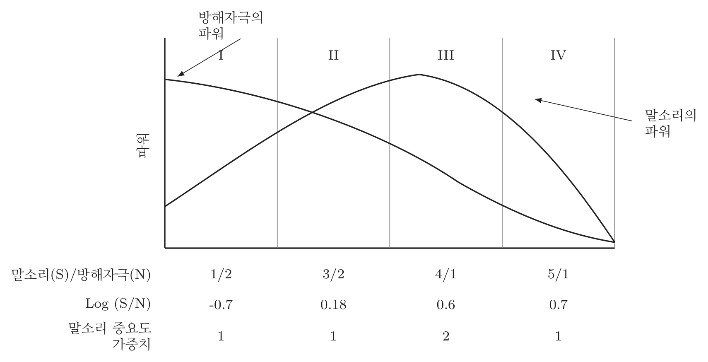

2021년 3회 · 산업안전기사 필기 CBT 기출 재배열 전사 검수본
지면(PDF)과 대조 검수용 · 수식은 KaTeX 렌더 · 총 문항
제1과목 안전관리론
001빈출도 ★☆☆난이도 2·보통개념형safe_A_2021_03_001
안전교육방법 중 강의법에 대한 설명으로 옳지 않은 것은?
① 단기간의 교육 시간 내에 비교적 많은 내용을 전달할 수 있다.
② 다수의 수강자를 대상으로 동시에 교육할 수 있다.
③ 다른 교육방법에 비해 수강자의 참여가 제약된다.
④ 수강자 개개인의 학습진도를 조절할 수 있다.
정답: 4
해설
개개인의 진도를 조절할 수 있는 것은 프로그램 학습법이다. 강의는 모두를 같은 속도로 끌고 간다.
강의법의 장단점
| 장점 | 짧은 시간에 많은 내용을 전달한다 | |
| 여럿을 한꺼번에 가르친다 | 비용이 적게 든다 |
| 교육 내용과 시간을 강사가 조절한다 | |
| 단점 | 수강자의 참여가 제약된다 | |
| 개인의 학습진도를 맞출 수 없다 | ④가 틀린 까닭 |
| 태도교육에는 알맞지 않다 | |
오답 분석
① 짧은 시간에 많은 내용을 전달하는 것은 장점이다.
② 여럿을 동시에 가르치는 것도 장점이다.
③ 수강자의 참여가 제약되는 것은 단점으로 맞는 설명이다.
관련 개념 · 암기
강의법강의는 한 사람이 여럿에게 말하는 방식이라
빠르고 값싼 대신 개인에 맞출 수 없다.
「개개인」이라는 낱말이 나오면 강의법이 아니다.
◈ 암기 강의법은 개인의 학습진도를 맞출 수 없다.
🃏 관련 암기카드
⚠ 점검 요망: 오염 문항과 이웃함
분류: 재해조사 및 분석 > 재해 손실비 > 강의법 · 원본 2019.08.04
002빈출도 ★☆☆난이도 2·보통개념형safe_A_2021_03_002
산업안전보건법령상 ( )에 알맞은 기준은?
안전ㆍ보건표지의 제작에 있어 안전ㆍ보건표지 속의 그림 또는 부호의 크기는 안전ㆍ보건표지의 크기와 비례하여야 하며, 안전ㆍ보건표지 전체 규격의 ( )이상이 되어야 한다.
정답: 2
해설
전체 규격의 30% 이상이다.
안전보건표지의 제작 기준
| 기준 | |
|---|
| 그림·부호의 크기는 표지 전체 규격의 30% 이상 | 이 문항 |
| 표지는 그 표시 내용을 근로자가 알아보기 쉽게 제작한다 | |
| 쉽게 파손되거나 변형되지 않는 재료로 만든다 | |
| 야간에도 알아볼 수 있는 곳은 야광물질을 쓴다 | |
오답 분석
① 20%는 기준값이 아니다.
③ 40% 도 그렇다.
④ 50% 도 그렇다.
관련 개념 · 암기
안전보건표지의 제작표지는 「그림이 눈에 들어와야」 쓸모가 있다 —
판의 3분의 1 가까이(30%)를 그림이 차지 하도록 못 박아 두었다.
◈ 암기 그림·부호는 표지 전체 규격의 30% 이상.
🃏 관련 암기카드
분류: 안전보건표지 > 표지 > 안전보건표지 · 원본 2019.08.04
003빈출도 ★☆☆난이도 1·쉬움개념형safe_A_2021_03_003
특정과업에서 에너지 소비수준에 영향을 미치는 인자가 아닌 것은?
① 작업방법
② 작업속도
③ 작업관리
④ 도구
정답: 3
해설
작업관리는 사람과 일을 어떻게 꾸리는가의 문제라 에너지 소비량과 직접 이어지지 않는다.
에너지 소비수준에 영향을 주는 인자
| 인자 | |
|---|
| 작업방법 | 어떤 자세와 동작으로 하는가 |
| 작업속도 | 빠를수록 많이 쓴다 |
| 작업자세 | 서서 · 앉아서 · 쭈그려서 |
| 도구 | 무겁고 다루기 나쁠수록 많이 쓴다 |
| 작업관리 | 인자가 아니다 |
오답 분석
① 작업방법은 에너지 소비수준에 영향을 준다.
② 작업속도도 그렇다.
④ 도구도 그렇다.
관련 개념 · 암기
에너지 소비수준셋은 「몸을 어떻게 쓰는가」이고 하나는
「일을 어떻게 시키는가」다 —
몸에 직접 닿지 않는 것만 빠진다.
◈ 암기 작업관리는 에너지 소비수준의 인자가 아니다.
🃏 관련 암기카드
분류: — > — > 에너지 소비수준 · 원본 2019.03.03
004빈출도 ★☆☆난이도 2·보통개념형safe_A_2021_03_004
사고예방대책의 기본원리 5단계 중 틀린 것은?
① 1단계 : 안전관리계획
② 2단계 : 현상파악
③ 3단계 : 분석평가
④ 4단계 : 대책의 선정
정답: 1
해설
1단계는 안전관리조직이다. 「안전관리계획」이 아니다.
하인리히의 사고예방대책 5단계
| 단계 | 이름 | 무엇 |
|---|
| 1 | 안전관리조직 | 경영층의 참여 · 조직 편성 · 방침 수립 · 「계획」이 아니다 |
| 2 | 사실의 발견(현상파악) | 점검 · 조사 · 관찰 · 사고조사 |
| 3 | 분석평가 | 원인 분석 · 재해기록 분석 |
| 4 | 시정방법의 선정(대책의 선정) | 기술적·교육적·관리적 개선 |
| 5 | 시정책의 적용 | 3E — 기술 · 교육 · 독려 |
오답 분석
② 2단계 현상파악은 맞다.
③ 3단계 분석평가도 맞다.
④ 4단계 대책의 선정도 맞다.
관련 개념 · 암기
사고예방대책의 기본원리「조직 → 발견 → 분석 → 선정 → 적용」 다섯 마디다 —
무엇을 하려면 먼저 사람을 모아 틀을 짜야 하니 첫 단계가 조직이다.
◈ 암기 1단계는 안전관리조직.
🃏 관련 암기카드
⚠ 점검 요망: 지문과 선택지 사이에 페이지가 바뀜 | 교차 오염 의심
분류: — > — > 사고예방대책의 5단계 · 원본 2019.03.03
005빈출도 ★☆☆난이도 2·보통개념형safe_A_2021_03_005
다음 중 위험예지훈련에 있어 브레인스토밍법의 원칙으로 적절하지 않는 것은?
① 무엇이든 좋으니 많이 발언 한다.
② 지정된 사람에 한하여 발언의 기회가 부여된다.
③ 타인의 의견을 수정하거나 덧붙여서 말하여도 좋다.
④ 타인의 의견에 대하여 좋고 나쁨을 비평하지 않는다.
정답: 2
해설
누구나 자유롭게 말할 수 있어야 한다. 지정된 사람만 말하면 브레인스토밍이 아니다.
브레인스토밍의 4원칙
| 원칙 | 내용 | |
|---|
| 비판금지 | 좋고 나쁨을 비평하지 않는다 | ④ |
| 자유분방 | 마음 놓고 자유롭게 말한다 | ②가 어긋나는 곳 |
| 대량발언 | 무엇이든 좋으니 많이 말한다 | ① |
| 수정발언 | 남의 의견을 고치거나 덧붙여도 좋다 | ③ |
오답 분석
① 많이 발언하는 것은 대량발언의 원칙이다.
③ 남의 의견을 수정·보완하는 것은 수정발언의 원칙이다.
④ 좋고 나쁨을 비평하지 않는 것은 비판금지의 원칙이다.
관련 개념 · 암기
브레인스토밍의 4원칙「비판금지 · 자유분방 · 대량발언 · 수정발언」 넷이다 —
발언을 막는 쪽은 어느 원칙과도 맞지 않는다.
◈ 암기 비판금지 · 자유분방 · 대량발언 · 수정발언.
🃏 관련 암기카드
분류: 무재해운동 > 무재해·위험예지 > 브레인스토밍 · 원본 2011.03.20
006빈출도 ★☆☆난이도 1·쉬움개념형safe_A_2021_03_006
다음 중 안전모의 성능시험에 있어서 AE, ABE종에만 한하여 실시하는 시험은?
① 내관통성시험, 충격흡수성시험
② 난연성시험, 내수성시험
③ 내관통성시험, 내전압성시험
④ 내전압성시험, 내수성시험
정답: 4
해설
내전압성시험과 내수성시험이다. E가 붙은 것만 전기용이다.
안전모의 종류와 시험항목
| 종류 | 용도 | 시험항목 |
|---|
| AB | 낙하·비래 및 추락 방지 | 내관통성 · 충격흡수성 · 난연성 · 턱끈풀림 |
| AE | 낙하·비래 및 감전 방지 | 위 항목 + 내전압성 · 내수성 |
| ABE | 낙하·비래 · 추락 · 감전 방지 | 모든 항목 |
| 내전압성 | 교류 20kV에서 1분간 견디고 누설전류 10mA 이하 | |
| 내수성 | 질량증가율 1% 미만 | |
오답 분석
① 내관통성시험과 충격흡수성시험은 모든 종류에 한다.
② 난연성시험은 모든 종류에, 내수성시험은 AE·ABE 에만 한다.
③ 내관통성시험은 모든 종류에 한다.
관련 개념 · 암기
안전모의 성능시험「E」는 Electric — 전기다 —
E가 붙은 AE · ABE 만 전기에 관한 시험(내전압성 · 내수성)을 더한다.
젖으면 전기가 통하니 내수성도 함께 본다.
◈ 암기 AE·ABE 만 내전압성·내수성 시험.
🃏 관련 암기카드
분류: 보호구 > 안전모·안전대 > 안전모 · 원본 2014.03.02
007빈출도 ★☆☆난이도 1·쉬움개념형safe_A_2021_03_007
다음 중 적성의 기본요소라 할 수 있는 것은?
① 지능
② 교육수준
③ 환경조건
④ 가족관계
정답: 1
해설
지능이다. 적성은 그 사람이 지닌 능력을 말한다.
적성의 기본요소
| 요소 | |
|---|
| 직업적성 | 그 일에 맞는 소질 |
| 지능 | 이 문항 |
| 흥미 | |
| 인간성(성격) | |
| 교육수준 · 환경조건 · 가족관계 | 밖의 조건 — 적성의 기본요소가 아니다 |
오답 분석
② 교육수준은 밖에서 주어진 조건이다.
③ 환경조건도 그렇다.
④ 가족관계도 그렇다.
관련 개념 · 암기
적성의 기본요소적성은 「그 사람 안에 있는 것」이다 —
보기 셋은 모두 둘레의 사정이라 하나만 남는다.
◈ 암기 적성의 기본요소는 직업적성·지능·흥미·인간성.
🃏 관련 암기카드
분류: 산업심리 > 적성·검사 > 적성 · 원본 2011.08.21
008빈출도 ★☆☆난이도 2·보통개념형safe_A_2021_03_008
레윈(Lewin)은 인간의 행동 특성을 다음과 같이 표현하였다. 변수「E」가 의미하는 것으로 옳은 것은?
B = f( P · E )
정답: 3
해설
E는 환경(Environment)이다. 작업환경 · 인간관계 · 설비 같은 둘레의 조건을 말한다.
레빈(Lewin)의 법칙
| 기호 | 뜻 | 보기 |
|---|
| B | Behavior — 인간의 행동 | |
| f | function — 함수관계 | |
| P | Person — 사람의 조건 | 연령 · 성격 · 지능 · 소질 · 경험 · 심신 상태 · ①②④ |
| E | Environment — 환경 조건 | 작업환경 · 인간관계 · 설비적 결함 · ③ |
오답 분석
① 연령은 P에 드는 조건이다.
② 성격도 그렇다.
④ 지능도 그렇다.
관련 개념 · 암기
레빈의 법칙보기 셋이 모두 사람의 속성(P)이고
하나만 둘레의 조건(E)이다 —
「환경」이라는 낱말이 들어간 것을 고르면 된다.
◈ 암기 B = f(P · E), E는 환경.
🃏 관련 암기카드
분류: 산업심리 > 인간의 행동 > 레빈의 법칙 · 원본 2011.08.21
009빈출도 ★☆☆난이도 1·쉬움개념형safe_A_2021_03_009
다음 중 적성요인에 있어 직업적성을 검사하는 항목이 아닌 것은?
① 지능
② 촉각 적응력
③ 형태식별능력
④ 운동속도
정답: 2
해설
촉각 적응력은 직업적성 검사 항목이 아니다.
직업적성 검사의 항목
| 항목 | |
|---|
| 지능 | |
| 형태식별능력 | 모양을 가려내는 능력 |
| 운동속도 | 손과 눈의 협응 |
| 수리능력 · 사무지각 · 공간판단력 · 언어능력 · 손가락 재치 · 손 재치 | |
| 촉각 적응력 | 검사 항목이 아니다 |
오답 분석
① 지능은 직업적성 검사 항목이다.
③ 형태식별능력도 그렇다.
④ 운동속도도 그렇다.
관련 개념 · 암기
직업적성 검사적성검사는 「보고 · 생각하고 · 손을 놀리는」 능력을 잰다 —
촉각(만져서 느끼는 감각)은 그 목록에 없다.
◈ 암기 촉각 적응력은 직업적성 검사 항목이 아니다.
🃏 관련 암기카드
분류: 산업심리 > 적성·검사 > 적성검사 · 원본 2011.06.12
010빈출도 ★☆☆난이도 2·보통개념형safe_A_2021_03_010
다음 중 산업안전보건법령상 안전보건관리책임자 등의 안전보건교육시간 기준으로 틀린 것은?
① 보건관리자의 보수교육 : 24시간이상
② 안전관리자의 신규교육 : 34시간이상
③ 안전보건관리책임자의 보수교육 : 6시간이상
④ 재해예방전문지도기관 종사자의 신규교육 : 24시간이상
정답: 4
해설
재해예방전문지도기관 종사자의 신규교육은 34시간 이상이다.
안전보건관리책임자 등의 교육시간
| 대상 | 신규교육 | 보수교육 |
|---|
| 안전보건관리책임자 | 6시간 이상 | 6시간 이상 |
| 안전관리자 · 보건관리자 | 34시간 이상 | 24시간 이상 |
| 안전보건관리담당자 | — | 8시간 이상 |
| 재해예방전문지도기관 종사자 | 34시간 이상 | 24시간 이상 |
| 안전검사기관·자율안전검사기관 종사자 | 34시간 이상 | 24시간 이상 |
오답 분석
① 보건관리자의 보수교육 24시간 이상은 맞다.
② 안전관리자의 신규교육 34시간 이상도 맞다.
③ 안전보건관리책임자의 보수교육 6시간 이상도 맞다.
관련 개념 · 암기
안전보건관리책임자 등의 교육시간「책임자만 6 · 6, 나머지 전문가는 34 · 24」로 갈린다 —
책임자는 관리자라 짧고, 실무 전문가는 길다.
◈ 암기 책임자 6·6, 전문가 34·24.
🃏 관련 암기카드
분류: 안전보건관리 체제 > 선임·자격 > 안전보건교육시간 · 원본 2013.03.10
011빈출도 ★☆☆난이도 2·보통개념형safe_A_2021_03_011
산업안전보건법에 따라 안전보건개선계획의 수립ㆍ시정 명령을 받은 사업주는 고용노동부장관이 정하는 바에 따라 안전보건개선계획서를 작성하여 그 명령을 받은 날부터 몇 일 이내에 관할 지방고용노동관서의 장에게 제출하여야 하는가?
정답: 4
해설
60일 이내다.
안전보건개선계획의 절차
| 항목 | 기간 | |
|---|
| 계획서 제출 | 명령을 받은 날부터 60일 이내 | 이 문항 |
| 심사와 결과 통보 | 계획서를 받은 날부터 15일 이내 | |
| 대상 | 산업재해율이 같은 업종 평균의 2배 이상 · 중대재해 발생 · 직업성 질병자 연 2명 이상 · 유해인자 노출기준 초과 | |
오답 분석
① 15일은 심사 결과를 통보하는 기간이다.
② 30일은 기준값이 아니다.
③ 45일도 그렇다.
관련 개념 · 암기
안전보건개선계획「내는 데 60일, 심사에 15일」이다 —
계획을 세우는 쪽이 오래 걸린다고 생각하면 헷갈리지 않는다.
◈ 암기 안전보건개선계획서는 60일 이내 제출.
🃏 관련 암기카드
분류: 안전보건관리 체제 > 안전보건관리규정 > 안전보건개선계획 · 원본 2012.08.26
012빈출도 ★☆☆난이도 2·보통개념형safe_A_2021_03_012
동기부여이론 중 데이비스(K.Davis)의 이론은 동기유발을 식으로 표현하였다. 옳은 것은?
① 지식(knowledge) × 기능(skill)
② 능력(ability) × 태도(attitude)
③ 상황(situation) × 태도(attitude)
④ 능력(attitude) × 동기유발(motivation)
정답: 3
해설
동기유발 = 상황 × 태도다.
데이비스(K. Davis)의 등식
| 등식 | |
|---|
| 경영의 성과 = 인간의 성과 × 물질의 성과 | |
| 인간의 성과 = 능력 × 동기유발 | |
| 능력 = 지식 × 기능 | ① |
| 동기유발 = 상황 × 태도 | ③ — 이 문항 |
오답 분석
① 지식 × 기능은 능력을 나타낸 식이다.
② 능력 × 태도라는 식은 없다.
④ 능력 × 동기유발은 인간의 성과를 나타낸 식이다.
관련 개념 · 암기
데이비스의 동기부여 이론네 등식이 사다리처럼 이어진다 —
「능력 = 지식 × 기능」과 「동기유발 = 상황 × 태도」가 아래 두 칸이고,
그 둘을 곱하면 인간의 성과다.
◈ 암기 동기유발 = 상황 × 태도.
🃏 관련 암기카드
분류: 안전보건교육 > 학습이론 > 데이비스의 동기부여 이론 · 원본 2014.05.25
013빈출도 ★☆☆난이도 2·보통개념형safe_A_2021_03_013
산업안전보건법령상 거푸집 동바리의 조립 또는 해체작업 시 특별교육 내용이 아닌 것은? (단, 그 밖에 안전·보건관리에 필요한 사항은 제외한다.)
① 비계의 조립순서 및 방법에 관한 사항
② 조립 해체 시의 사고 예방에 관한 사항
③ 동바리의 조립방법 및 작업 절차에 관한 사항
④ 조립재료의 취급방법 및 설치기준에 관한 사항
정답: 1
해설
비계의 조립순서는 비계 조립·해체작업의 특별교육 내용이다.
거푸집 동바리 조립·해체작업의 특별교육
| 내용 | |
|---|
| 동바리의 조립방법 및 작업 절차에 관한 사항 | |
| 조립재료의 취급방법 및 설치기준에 관한 사항 | |
| 조립·해체 시의 사고 예방에 관한 사항 | |
| 보호구 착용 및 점검에 관한 사항 | |
| 비계의 조립순서 및 방법 | 비계 조립·해체작업의 교육 내용 |
오답 분석
② 조립·해체 시의 사고 예방은 이 작업의 교육 내용이다.
③ 동바리의 조립방법과 작업 절차도 그렇다.
④ 조립재료의 취급방법과 설치기준도 그렇다.
관련 개념 · 암기
특별안전보건교육의 내용물음이 「거푸집 동바리」 인데
하나만 「비계」 라고 적혀 있다 —
작업 이름이 다른 보기를 고르면 된다.
◈ 암기 비계 조립순서는 비계 작업의 특별교육.
🃏 관련 암기카드
⚠ 점검 요망: 오염 문항과 이웃함
분류: 안전보건교육 > 법정 교육시간 > 특별안전보건교육 · 원본 2022.04.24
014빈출도 ★☆☆난이도 2·보통개념형safe_A_2021_03_014
학습정도(Level of learning)의 4단계를 순서대로 나열한 것은?
① 인지 → 이해 → 지각 → 적용
② 인지 → 지각 → 이해 → 적용
③ 지각 → 이해 → 인지 → 적용
④ 지각 → 인지 → 이해 → 적용
정답: 2
해설
인지 → 지각 → 이해 → 적용이다.
학습정도의 4단계
| 단계 | 이름 | 무엇 |
|---|
| 1 | 인지(to acquaint) | 그런 것이 있다는 것을 안다 |
| 2 | 지각(to know) | 무엇인지 알아본다 |
| 3 | 이해(to understand) | 왜 그런지 안다 |
| 4 | 적용(to apply) | 실제로 써 본다 |
오답 분석
① 이해가 지각보다 앞설 수는 없다.
③ 지각이 인지보다 앞설 수 없다.
④ 인지가 이해보다 뒤에 올 수도 없다.
관련 개념 · 암기
학습정도의 4단계「있는 줄 알고 → 알아보고 → 까닭을 알고 → 써먹는다」 순이다 —
앞의 둘(인지 · 지각)이 헷갈리기 쉬운데 「인지」가 더 얕다.
◈ 암기 인지 · 지각 · 이해 · 적용.
🃏 관련 암기카드
⚠ 점검 요망: 지문과 선택지 사이에 페이지가 바뀜 | 교차 오염 의심
분류: 안전보건교육 > 교육계획·평가 > 학습정도의 4단계 · 원본 2022.04.24
015빈출도 ★☆☆난이도 3·어려움계산형safe_A_2021_03_015
산업재해보험적용근로자 1000명인 플라스틱 제조 사업장에서 작업 중 재해 5건이 발생하였고, 1명이 사망하였을 때 이 사업장의 사망만인율은?
정답: 3
해설
$$\text{사망만인율} = \dfrac{\text{사망자수}}{\text{근로자수}} \times 10 {,} 000 = \dfrac{1}{1 {,} 000} \times 10 {,} 000 = 10$$
사망만인율
| 식 | |
|---|
| 사망만인율 | $\dfrac{\text{사망자수}}{\text{근로자수}} \times 10^{4}$ | 근로자 1만 명당 사망자 수 |
| 재해율 | $\dfrac{\text{재해자수}}{\text{근로자수}} \times 100$ | 백분율 |
| 이 문항 | $\dfrac{1}{1 {,} 000} \times 10 {,} 000 = 10$ | 재해 5건은 쓰지 않는다 |
오답 분석
① 2는 계산과 맞지 않는다.
② 5는 재해 건수를 그대로 쓴 값이다.
④ 20 도 그렇다.
관련 개념 · 암기
사망만인율「만인율」은 1만 명당이라는 뜻이다 —
재해 5건은 답과 상관없는 미끼다.
사망자 수만 쓰면 된다.
◈ 암기 사망만인율 = 사망자수 ÷ 근로자수 × 10,000.
🃏 관련 암기카드
⚠ 그림 보강 필요: 2
분류: 안전보건교육 > 교육계획·평가 > 사망만인율 · 원본 2022.03.05
016빈출도 ★☆☆난이도 2·보통개념형safe_A_2021_03_016
산업안전보건법령상 안전인증 절연장갑에 안전인증 표시외에 추가로 표시하여야 하는 내용 중 등급별 색상의 연결이 옳은 것은?
① 00등급 : 갈색
② 0등급 : 흰색
③ 1등급 : 노랑색
④ 2등급 : 빨강색
정답: 1
해설
00등급이 갈색이다.
절연장갑의 등급별 색상과 최대사용전압
| 등급 | 색상 | 최대사용전압(교류) |
|---|
| 00 | 갈색 | 500 V |
| 0 | 빨간색 | 1,000 V |
| 1 | 흰색 | 7,500 V |
| 2 | 노란색 | 17,000 V |
| 3 | 녹색 | 26,500 V |
| 4 | 등색 | 36,000 V |
오답 분석
② 0등급은 흰색이 아니라 빨간색이다.
③ 1등급은 노랑색이 아니라 흰색이다.
④ 2등급은 빨강색이 아니라 노란색이다.
관련 개념 · 암기
절연장갑의 등급「갈 · 빨 · 흰 · 노 · 녹 · 등」 여섯 색이다 —
보기 ②③④는 색을 한 칸씩 밀어 놓았고 ①만 제자리다.
◈ 암기 00등급 갈색, 0등급 빨강, 1등급 흰색, 2등급 노랑.
🃏 관련 암기카드
분류: 안전점검·인증 > 안전인증·검사 > 절연장갑 · 원본 2013.06.02
017빈출도 ★☆☆난이도 3·어려움계산형safe_A_2021_03_017
어떤 사업장의 상시근로자 1000명이 작업 중 2명 사망자와 의사진단에 의한 휴업일수 90일 손실을 가져온 경우의 강도율은? (단, 1일 8시간, 연 300일 근무)
① 7.32
② 6.28
③ 8.12
④ 5.92
정답: 2
해설
사망 2명은 7,500 × 2 = 15,000일, 휴업 90일은 90 × 300/365 ≒ 73.97일이다.$\text{강도율} = \dfrac{15 {,} 000 + 73.97}{1 {,} 000 \times 8 \times 300} \times 1 {,} 000 \fallingdotseq 6.28$
강도율의 계산
| 사망 1명의 근로손실일수 | 7,500일 | 2명 → 15,000일 |
| 휴업일수 환산 | $\text{휴업일수} \times \dfrac{300}{365}$ | 90 × 300/365 ≒ 73.97일 |
| 연근로시간 | 1,000 × 8 × 300 = 2,400,000시간 | |
| 강도율 | $\dfrac{15 {,} 073.97}{2 {,} 400 {,} 000} \times 1 {,} 000 \fallingdotseq 6.28$ | |
오답 분석
① 7.32는 휴업일수를 환산하지 않은 값에 가깝다.
③ 8.12는 계산과 맞지 않는다.
④ 5.92 도 그렇다.
관련 개념 · 암기
강도율휴업일수는 그대로 쓰지 않고 「300/365」를 곱해 근로손실일수로 바꾼다 —
쉬는 날을 빼는 것이다.
사망 1명은 7,500일이라는 값이 계산을 지배한다.
◈ 암기 사망 7,500일, 휴업일수 × 300/365.
🃏 관련 암기카드
⚠ 점검 요망: 오염 문항과 이웃함
분류: 재해조사 및 분석 > 상해 분류 > 강도율 · 원본 2018.04.28
018빈출도 ★☆☆난이도 2·보통개념형safe_A_2021_03_018
무재해운동에 관한 설명으로 틀린 것은?
① 제3자의 행위에 의한 업무상 재해는 무재해로 본다.
② 작업 시간 중 천재지변 또는 돌발적인 사고로 인한 구조행위 또는 긴급피난 중 발생한 사고는 무재해로 본다.
③ 무재해란 무재해운동 시행사업장에서 근로자가 업무에 기인하여 사망 또는 2일 이상의 요양을 요하는 부상 또는 질병에 이환되지 않는 것을 말한다.
④ 작업 시간 외에 천재지변 또는 돌발적인 사고 우려가 많은 장소에서 사회통념상 인정되는 업무수행 중 발생한 사고는 무재해로 본다.
정답: 3
해설
4일 이상의 요양을 요하는 것이 기준이다. 「2일 이상」이 아니다.
무재해의 정의와 예외
| 무재해 | 업무에 기인하여 사망하거나 4일 이상의 요양을 요하는 부상·질병에 이르지 않는 것 | 「2일」이 아니다 |
| 무재해로 보는 것 | 제3자의 행위에 의한 업무상 재해 | |
| 작업시간 중 천재지변·돌발사고로 인한 구조행위나 긴급피난 중의 사고 | |
| 작업시간 외에 돌발사고 우려가 많은 장소에서 사회통념상 인정되는 업무수행 중의 사고 | |
| 출퇴근 도중의 재해 · 운동경기 등 행사 중의 재해 | |
오답 분석
① 제3자의 행위에 의한 업무상 재해를 무재해로 보는 것은 맞다.
② 구조행위나 긴급피난 중의 사고도 그렇다.
④ 작업시간 외 업무수행 중의 사고도 그렇다.
관련 개념 · 암기
무재해의 정의산업재해 신고 기준과 같은 「4일」이다 —
2일로 낮춰 놓으면 훨씬 엄격해 보이지만 규정과 다르다.
◈ 암기 무재해 기준은 4일 이상의 요양.
🃏 관련 암기카드
⚠ 점검 요망: 오염 문항과 이웃함
분류: 재해조사 및 분석 > 상해 분류 > 무재해운동 · 원본 2017.03.05
019빈출도 ★☆☆난이도 2·보통개념형safe_A_2021_03_019
재해통계를 포함하여 산업재해조사 보고서를 작성하는 과정 중 유의해야 할 사항으로 가장 적절하지 않은 것은?
① 설비상의 결함 요인을 개선, 시정하는데 활용한다.
② 관리상 책임 소재를 명시하여 담당자의 평가 자료로 활용한다.
③ 재해의 구성요소와 분포상태를 알고 대책을 수립할 수 있도록 한다.
④ 근로자 행동결함을 발견하여 안전교육 훈련 자료로 활용
정답: 2
해설
책임을 묻는 자료로 쓰면 사실을 숨기게 된다. 재해조사는 원인을 찾는 것이지 사람을 벌하기 위한 것이 아니다.
재해조사의 목적
| 목적 | |
|---|
| 같은 재해가 되풀이되지 않도록 원인을 찾는다 | |
| 설비상의 결함을 개선·시정하는 데 쓴다 | |
| 재해의 구성요소와 분포를 알아 대책을 세운다 | |
| 근로자의 행동결함을 찾아 안전교육 자료로 쓴다 | |
| 책임 소재를 밝혀 담당자를 평가한다 | 목적이 아니다 |
오답 분석
① 설비 결함의 개선·시정에 활용하는 것은 옳다.
③ 재해의 구성요소와 분포를 파악하는 것도 옳다.
④ 행동결함을 찾아 교육자료로 쓰는 것도 옳다.
관련 개념 · 암기
재해조사의 목적재해조사의 첫 원칙은 「사람을 탓하지 않는다」다 —
벌을 주면 다음부터 사고를 숨긴다.
「책임 · 평가 · 문책」이라는 낱말이 나오면 오답이다.
◈ 암기 재해조사는 책임 추궁이 목적이 아니다.
🃏 관련 암기카드
분류: 재해조사 및 분석 > 재해조사·통계 > 재해조사 · 원본 2016.03.06
020빈출도 ★☆☆난이도 1·쉬움개념형safe_A_2021_03_020
다음 중 재해코스트 산출에 있어 직접비에 해당하지 않은 것은?
① 장례비
② 요양비
③ 장해 보상비
④ 설비의 수리비 및 손실비
정답: 4
해설
설비의 수리비는 간접비다. 직접비는 산재보험으로 지급되는 돈이다.
하인리히의 재해코스트
| 직접비 | 요양급여 · 휴업급여 · 장해급여 · 유족급여 · 장례비 · 상병보상연금 · 간병급여 · 직업재활급여 | 산재보험으로 나가는 돈 |
| 간접비 | 설비의 수리비와 손실 · 생산 중단 손실 · 신규 채용과 교육비 · 시간 손실 | 직접비의 4배 |
| 총 코스트 | 직접비 + 간접비 = 직접비 × 5 | 1 : 4 |
오답 분석
① 장례비는 직접비다.
② 요양비도 그렇다.
③ 장해 보상비도 그렇다.
관련 개념 · 암기
재해코스트「보험에서 나오는 돈이면 직접비, 회사가 따로 무는 돈이면 간접비」다 —
설비를 고치는 값은 보험이 주지 않는다.
1 : 4라는 비율도 함께 잡아 둔다.
◈ 암기 직접비 : 간접비 = 1 : 4.
🃏 관련 암기카드
⚠ 점검 요망: 오염 문항과 이웃함
분류: 재해조사 및 분석 > 재해 손실비 > 재해코스트 · 원본 2012.08.26
제2과목 인간공학 및 시스템안전공학
021빈출도 ★☆☆난이도 1·쉬움개념형safe_A_2021_03_021
다음 중 조작상의 과오로 기기의 일부에 고장이 발생하는 경우, 이 부분의 고장으로 인하여 사고가 발생하는 것을 방지하도록 설계하는 방법은?
① 신뢰성 설계
② 페일 세이프(fail safe) 설계
③ 풀 프루프(fool proof) 설계
④ 사고 방지(accident proof) 설계
정답: 2
해설
페일 세이프다. 고장이 나도 사고로 이어지지 않게 하는 설계다.
페일 세이프와 풀 프루프
| 페일 세이프 | 풀 프루프 |
|---|
| 무엇이 잘못되나 | 기계가 고장 난다 | 사람이 잘못 다룬다 |
| 어떻게 막나 | 고장 나도 안전한 쪽으로 움직인다 | 잘못 다루면 아예 작동하지 않는다 |
| 보기 | 철도 신호기 · 승강기 브레이크 | 세탁기 문을 열면 멈춘다 · 가드 인터록 |
| 갈래 | fail passive · fail active · fail operational | |
오답 분석
① 신뢰성 설계는 고장 자체를 줄이는 설계다.
③ 풀 프루프 설계는 사람의 잘못을 막는 설계다.
④ 「사고 방지 설계」라는 용어는 쓰이지 않는다.
관련 개념 · 암기
페일 세이프 설계「고장(fail)이 나도 안전(safe)하게」라는 이름 그대로다 —
물음이 「기기의 고장」에서 시작 하니 사람 쪽인 풀 프루프가 아니다.
◈ 암기 고장이 나도 사고가 안 되게 하면 페일 세이프.
🃏 관련 암기카드
분류: 설비 유지관리 > 설비관리 > 페일 세이프 · 원본 2011.06.12
022빈출도 ★☆☆난이도 2·보통개념형safe_A_2021_03_022
다음 중 FTA(Fault Tree Analysis)에 관한 설명으로 가장 적절한 것은?
① 복잡하고, 대형화된 시스템의 신뢰성 분석에는 적절하지 않다.
② 시스템 각 구성요소의 기능을 정상인가 또는 고장인가로 점진적으로 구분 짓는다.
③ 「그것이 발생하기 위해서는 무엇이 필요한가」라는 것은 연역적이다.
④ 사건들을 일련의 이분(binary) 의사 결정 분기들로 모형화한다.
정답: 3
해설
「그것이 일어나려면 무엇이 있어야 하나」를 거슬러 올라가는 연역적 방법이다.
FTA의 성격
| 방향 | 정상사상에서 원인으로 내려간다 | 연역적(top-down) |
| 성격 | 정성적·정량적 분석이 모두 된다 | |
| 적용 | 복잡하고 대형화된 시스템에 알맞다 | ①이 틀린 까닭 |
| FMEA 와의 차이 | FMEA는 귀납적·상향식(bottom-up) | ②④는 ETA·FMEA 쪽 설명 |
오답 분석
① FTA는 오히려 복잡하고 큰 시스템에 알맞다.
② 구성요소를 정상·고장으로 점진적으로 나누는 것은 FMEA의 방식이다.
④ 이분 의사결정 분기로 모형화하는 것은 ETA다.
관련 개념 · 암기
FTA의 특징「무엇이 필요한가」를 거꾸로 캐물으면 연역이고,
「이것이 고장 나면 어떻게 되나」를 쌓아 올리면 귀납이다 —
FTA가 앞, FMEA가 뒤다.
◈ 암기 FTA는 연역적, FMEA는 귀납적.
🃏 관련 암기카드
⚠ 점검 요망: 오염 문항과 이웃함
분류: 결함수분석 > FTA 기호·구조 > FTA · 원본 2016.03.06
023빈출도 ★☆☆난이도 1·쉬움개념형safe_A_2021_03_023
FTA에 사용되는 논리게이트 중 조건부 사건이 발생하는 상황 하에서 입력현상이 발생할 때 출력현상이 발생하는 것은?
① 억제 게이트
② AND 게이트
③ 배타적 OR 게이트
④ 우선적 AND 게이트
정답: 1
해설
억제 게이트다. 조건이 만족될 때만 입력이 출력으로 넘어간다.
FTA의 게이트
| 게이트 | 조건 | |
|---|
| 억제 게이트 | 조건부 사건이 일어났을 때만 출력 | 이 문항 · 육각형 안에 조건을 적는다 |
| AND 게이트 | 입력이 모두 일어나야 출력 | |
| OR 게이트 | 입력 중 하나만 일어나도 출력 | |
| 배타적 OR 게이트 | 입력 중 하나만 일어날 때 출력 | |
| 우선적 AND 게이트 | 정해진 순서로 일어날 때 출력 | |
오답 분석
② AND 게이트는 입력이 모두 일어나야 출력한다.
③ 배타적 OR 게이트는 하나만 일어날 때 출력한다.
④ 우선적 AND 게이트는 순서 조건이 붙는다.
관련 개념 · 암기
억제 게이트「억제(抑制)」는 조건이 안 맞으면 막는다는 뜻이다 —
「조건부」라는 낱말이 곧 억제 게이트다.
게이트 옆의 육각형 안에 조건을 적는다.
◈ 암기 조건부 사건이 붙으면 억제 게이트.
🃏 관련 암기카드
⚠ 점검 요망: 지문과 선택지 사이에 페이지가 바뀜 | 교차 오염 의심
분류: 결함수분석 > FTA 기호·구조 > FTA 게이트 · 원본 2015.08.16
024빈출도 ★☆☆난이도 3·어려움계산형safe_A_2021_03_024
다음 그림에서 명료도 지수는?

① 0.38
② 0.68
③ 1.38
④ 5.68
정답: 3
해설
구간마다 log(S/N)에 가중치를 곱해 모두 더한다.$AI = (-0.7 \times 1 ) + ( 0.18 \times 1 ) + ( 0.6 \times 2 ) + ( 0.7 \times 1 ) = 1.38$
명료도 지수(AI)의 계산
| 구간 | log(S/N) | 가중치 | 곱 |
|---|
| Ⅰ | −0.7 | 1 | −0.7 |
| Ⅱ | 0.18 | 1 | 0.18 |
| Ⅲ | 0.6 | 2 | 1.2 |
| Ⅳ | 0.7 | 1 | 0.7 |
| 합계 | | | 1.38 |
오답 분석
① 0.38은 Ⅲ구간의 가중치를 1로 잡은 값이다.
② 0.68은 계산과 맞지 않는다.
④ 5.68 도 그렇다.
관련 개념 · 암기
명료도 지수Ⅲ구간의 가중치만 2라는 것이 이 문제의 전부다 —
그것을 1로 보면 0.78, 음수를 빠뜨리면 더 커진다.
음수 −0.7을 빼먹지 않는 것이 또 하나의 함정이다.
◈ 암기 AI = Σ(log(S/N) × 가중치).
🃏 관련 암기카드
⚠ 점검 요망: 오염 문항과 이웃함
분류: — > — > 명료도 지수 · 원본 2021.08.14
025빈출도 ★☆☆난이도 2·보통개념형safe_A_2021_03_025
연구 기준의 요건과 내용이 옳은 것은?
① 무오염성 : 실제로 의도하는 바와 부합해야 한다.
② 적절성 : 반복 실험 시 재현성이 있어야 한다.
③ 신뢰성 : 측정하고자 하는 변수 이외의 다른 변수의 영향을 받아서는 안 된다.
④ 민감도 : 피실험자 사이에서 볼 수 있는 예상 차이점에 비례하는 단위로 측정해야 한다.
정답: 4
해설
민감도만 바르게 이어졌다. 앞의 셋은 이름과 내용이 서로 엇갈려 있다.
인간공학 연구 기준의 요건
| 요건 | 내용 | |
|---|
| 적절성(타당성) | 실제로 의도하는 바와 부합해야 한다 | ①의 내용 |
| 무오염성 | 재려는 변수 말고 다른 변수의 영향을 받지 않아야 한다 | ③의 내용 |
| 신뢰성 | 되풀이 실험할 때 재현성이 있어야 한다 | ②의 내용 |
| 민감도 | 피실험자 사이의 예상 차이에 비례하는 단위로 재야 한다 | ④ — 유일하게 맞다 |
오답 분석
① 「실제 의도와 부합」은 적절성의 내용이다.
② 「반복 실험 시 재현성」은 신뢰성의 내용이다.
③ 「다른 변수의 영향을 받지 않음」은 무오염성의 내용이다.
관련 개념 · 암기
연구 기준의 요건「적절성 = 맞는 것을 재나 · 무오염성 = 딴 것이 섞이지 않나 · 신뢰성 = 다시 해도 같나 · 민감도 = 차이를 가려내나」다 —
앞의 셋을 한 칸씩 돌려 놓았다.
◈ 암기 적절성·무오염성·신뢰성·민감도.
🃏 관련 암기카드
⚠ 점검 요망: 오염 문항과 이웃함
분류: — > — > 연구 기준의 요건 · 원본 2020.09.26
026빈출도 ★☆☆난이도 1·쉬움개념형safe_A_2021_03_026
NOISH lifting guideline에서 권장무게한계(RWL) 산출에 사용되는 계수가 아닌 것은?
① 휴식 계수
② 수평 계수
③ 수직 계수
④ 비대칭 계수
정답: 1
해설
휴식 계수라는 것은 없다.
NIOSH 권장무게한계(RWL)의 계수
| 계수 | 기호 | |
|---|
| 부하상수 | LC | 23 kg |
| 수평 계수 | HM | |
| 수직 계수 | VM | |
| 거리 계수 | DM | |
| 비대칭 계수 | AM | 몸을 튼 각도 |
| 빈도 계수 | FM | |
| 결합 계수 | CM | 손잡이의 상태 |
오답 분석
② 수평 계수는 RWL의 계수다.
③ 수직 계수도 그렇다.
④ 비대칭 계수도 그렇다.
관련 개념 · 암기
권장무게한계(RWL)RWL = LC × HM × VM × DM × AM × FM × CM이다 —
부하상수 23kg에 여섯 계수를 곱한다.
「휴식」은 그 목록에 없다.
◈ 암기 RWL은 LC·HM·VM·DM·AM·FM·CM.
🃏 관련 암기카드
⚠ 점검 요망: 지문과 선택지 사이에 페이지가 바뀜 | 교차 오염 의심
분류: 인간계측·작업공간 > 작업공간·자세 > 권장무게한계 · 원본 2020.08.22
027빈출도 ★☆☆난이도 1·쉬움개념형safe_A_2021_03_027
인간공학을 기업에 적용할 때의 기대효과로 볼 수 없는 것은?
① 노사 간의 신뢰 저하
② 작업손실시간의 감소
③ 제품과 작업의 질 향상
④ 작업자의 건강 및 안전 향상
정답: 1
해설
신뢰는 높아진다. 「저하」가 아니다.
인간공학 적용의 기대효과
| 효과 | |
|---|
| 작업손실시간의 감소 | |
| 제품과 작업의 질 향상 | |
| 작업자의 건강 및 안전 향상 | |
| 생산성 향상 · 이직률과 결근율 감소 | |
| 노사 간의 신뢰 향상 | 「저하」가 아니다 |
오답 분석
② 작업손실시간의 감소는 기대효과다.
③ 제품과 작업의 질 향상도 그렇다.
④ 작업자의 건강 및 안전 향상도 그렇다.
관련 개념 · 암기
인간공학의 기대효과보기 셋이 모두 좋아지는 쪽 인데
하나만 나빠지는 쪽이다 —
사람을 위하는 일이 노사 신뢰를 떨어뜨릴 까닭이 없다.
◈ 암기 인간공학은 노사 신뢰를 높인다.
🃏 관련 암기카드
⚠ 점검 요망: 오염 문항과 이웃함
분류: — > — > 인간공학의 기대효과 · 원본 2020.08.22
028빈출도 ★☆☆난이도 2·보통개념형safe_A_2021_03_028
위험 및 운전성 검토(HAZOP)에서의 전제조건으로 틀린 것은?
① 두 개 이상의 기기고장이나 사고는 일어나지 않는다.
② 조작자는 위험상황이 일어났을 때 그것을 인식할 수 있다.
③ 안전장치는 필요할 때 정상 동작하지 않는 것으로 간주한다.
④ 장치 자체는 설계 및 제작사양에 맞게 제작된 것으로 간주한다.
정답: 3
해설
안전장치는 필요할 때 제대로 작동하는 것으로 본다. 「동작하지 않는」이 아니다.
HAZOP의 전제조건
| 전제 | |
|---|
| 두 개 이상의 기기고장이나 사고는 동시에 일어나지 않는다 | |
| 장치와 설비는 설계·제작 사양에 맞게 만들어진 것으로 본다 | |
| 안전장치는 필요할 때 정상 동작하는 것으로 본다 | ③이 뒤집혔다 |
| 작업자는 위험상황이 생기면 알아차릴 수 있다고 본다 | |
| 사소한 지엽적인 변화도 부작용을 일으킬 수 있다고 본다 | |
오답 분석
① 두 개 이상의 고장이 동시에 일어나지 않는다고 보는 것은 전제조건이다.
② 조작자가 위험상황을 인식할 수 있다고 보는 것도 그렇다.
④ 장치가 설계 사양대로 제작되었다고 보는 것도 그렇다.
관련 개념 · 암기
HAZOP의 전제조건HAZOP은 「설비는 제대로 만들어졌고 안전장치도 잘 듣는다」고 놓고 시작한다 —
그래야 「그런데도 왜 위험한가」를 따질 수 있다.
◈ 암기 안전장치는 정상 동작하는 것으로 본다.
🃏 관련 암기카드
⚠ 점검 요망: 오염 문항과 이웃함
분류: 시스템 위험분석 > HAZOP·기타 > HAZOP 의 전제조건 · 원본 2014.08.17
029빈출도 ★☆☆난이도 1·쉬움개념형safe_A_2021_03_029
다음 중 시스템 내에 존재하는 위험을 파악하기 위한 목적으로 시스템 설계 초기 단계에 수행되는 위험분석 기법은?
① SHA
② FMEA
③ PHA
④ MORT
정답: 3
해설
PHA(예비위험분석)다. 가장 이른 단계에 한다.
시스템 수명주기와 위험분석
| 기법 | 언제 | |
|---|
| PHA | 구상·설계 초기 | 예비위험분석 · 이 문항 |
| FHA | 설계·개발 단계 | 서브시스템 조합 |
| FMEA | 설계 이후 | 고장형태와 영향 |
| OHA | 운용 단계 | 저장·수송·운전 |
| MORT | 관리 전반 | 원자력산업 |
| SHA | 서브시스템 위험분석 | |
오답 분석
① SHA는 서브시스템 위험분석이다.
② FMEA는 설계 이후 고장형태를 분석하는 기법이다.
④ MORT는 관리 전반을 다루는 프로그램이다.
관련 개념 · 암기
예비위험분석(PHA)「Preliminary(예비)」가 곧 「초기 단계」다 —
네 위험등급(파국적 · 중대 · 한계적 · 무시가능)으로 나누는 것도 PHA다.
◈ 암기 설계 초기의 위험분석은 PHA.
🃏 관련 암기카드
⚠ 점검 요망: 오염 문항과 이웃함
분류: 시스템 위험분석 > PHA·FHA·FMEA > 예비위험분석 · 원본 2013.06.02
030빈출도 ★☆☆난이도 1·쉬움개념형safe_A_2021_03_030
설비보전 방법 중 설비의 열화를 방지하고 그 진행을 지연시켜 수명을 연장하기 위한 점검, 청소, 주유 및 교체 등의 활동은?
① 사후 보전
② 개량 보전
③ 일상 보전
④ 보전 예방
정답: 3
해설
일상 보전이다. 점검 · 청소 · 주유 · 교체로 열화를 늦춘다.
설비보전의 갈래
| 보전 | 무엇 | |
|---|
| 일상 보전 | 점검·청소·주유·교체로 열화를 늦춘다 | 이 문항 |
| 예방 보전 | 고장 전에 미리 정비한다 | 시간기준 · 상태기준 |
| 사후 보전 | 고장이 난 뒤에 고친다 | |
| 개량 보전 | 설비 자체를 고쳐 고장이 덜 나게 한다 | |
| 보전 예방 | 설계 단계부터 보전이 필요 없게 만든다 | |
오답 분석
① 사후 보전은 고장이 난 뒤에 고치는 것이다.
② 개량 보전은 설비 자체를 개선하는 것이다.
④ 보전 예방은 설계 단계의 활동이다.
관련 개념 · 암기
설비보전의 종류「점검 · 청소 · 주유」는 날마다 하는 일이라 일상 보전이다 —
「개량」은 설비를 뜯어고치는 것, 「보전 예방」은 설계 단계로 시점이 다르다.
◈ 암기 점검·청소·주유·교체는 일상 보전.
🃏 관련 암기카드
⚠ 점검 요망: 오염 문항과 이웃함
분류: 신뢰성 > 보전 > 설비보전 · 원본 2021.05.15
031빈출도 ★☆☆난이도 1·쉬움개념형safe_A_2021_03_031
어떤 설비의 시간당 고장률이 일정하다고 하면 이 설비의 고장간격은 다음 중 어떠한 확률분포를 따르는가?
① t 분포
② 카이분포
③ 와이블분포
④ 지수분포
정답: 4
해설
지수분포다. 고장률이 일정하면 고장까지의 시간은 지수분포를 따른다.
고장률과 확률분포
| 고장률 | 분포 | |
|---|
| 일정(CFR) | 지수분포 | 우발 고장기 · 이 문항 |
| 시간에 따라 변한다 | 와이블분포 | 형상모수에 따라 감소·일정·증가 |
| 드문 사건의 발생 횟수 | 푸아송분포 | |
| t 분포 · 카이제곱분포 | 통계 검정에 쓴다 | 신뢰성 분포가 아니다 |
오답 분석
① t 분포는 평균의 검정에 쓰는 분포다.
② 카이분포도 검정에 쓰는 분포다.
③ 와이블분포는 고장률이 변할 때 쓴다.
관련 개념 · 암기
지수분포「고장률이 일정」이라는 단서가 곧 지수분포다 —
와이블은 고장률이 변할 때까지 아우르는 더 넓은 분포라, 일정하다는 조건이 붙으면 지수분포로 좁혀진다.
◈ 암기 고장률이 일정하면 지수분포.
🃏 관련 암기카드
분류: 신뢰성 > 신뢰도 계산 > 확률분포 · 원본 2013.08.18
032빈출도 ★☆☆난이도 1·쉬움개념형safe_A_2021_03_032
의자 설계의 인간공학적 원리로 틀린 것은?
① 쉽게 조절할 수 있도록 한다.
② 추간판의 압력을 줄일 수 있도록 한다.
③ 등근육의 정적 부하를 줄일 수 있도록 한다.
④ 고정된 자세로 장시간 유지할 수 있도록 한다.
정답: 4
해설
한 자세로 오래 있게 하면 안 된다. 자세를 자주 바꿀 수 있어야 한다.
의자 설계의 원리
| 원리 | |
|---|
| 체중이 좌골결절에 실리도록 한다 | |
| 추간판(디스크)에 걸리는 압력을 줄인다 | |
| 등근육의 정적 부하를 줄인다 | 요부전만을 유지 |
| 쉽게 조절할 수 있게 한다 | |
| 자세를 자주 바꿀 수 있게 한다 | ④가 틀린 까닭 |
오답 분석
① 쉽게 조절할 수 있게 하는 것은 옳다.
② 추간판의 압력을 줄이는 것도 옳다.
③ 등근육의 정적 부하를 줄이는 것도 옳다.
관련 개념 · 암기
의자 설계의 원리한 자세로 굳어 있는 것이 「정적 부하」다 —
③이 그 정적 부하를 줄이라고 했으니 ④와 정면으로 맞부딪힌다.
◈ 암기 고정된 자세를 오래 유지하게 해서는 안 된다.
🃏 관련 암기카드
⚠ 점검 요망: 지문과 선택지 사이에 페이지가 바뀜 | 교차 오염 의심
분류: 인간계측·작업공간 > 작업공간·자세 > 의자 설계 · 원본 2017.05.07
033빈출도 ★☆☆난이도 1·쉬움개념형safe_A_2021_03_033
의자 설계의 일반적인 원리로 가장 적절하지 않은 것은?
① 등근육의 정적 부하를 줄인다.
② 디스크가 받는 압력을 줄인다.
③ 요부전만(腰部前灣)을 유지한다.
④ 일정한 자세를 계속 유지하도록 한다.
정답: 4
해설
한 자세를 계속 유지하게 하면 안 된다.
의자 설계의 4원리
| 원리 | 무엇 | |
|---|
| 요부전만을 유지한다 | 허리가 앞으로 살짝 굽은 자연스러운 곡선 | 등받이 아래쪽을 받쳐 준다 |
| 디스크가 받는 압력을 줄인다 | 체중이 좌골결절에 실리게 | |
| 등근육의 정적 부하를 줄인다 | 팔걸이와 등받이로 받쳐 준다 | |
| 자세를 자주 바꿀 수 있게 한다 | ④가 틀린 까닭 | |
오답 분석
① 등근육의 정적 부하를 줄이는 것은 원리의 하나다.
② 디스크가 받는 압력을 줄이는 것도 그렇다.
③ 요부전만을 유지하는 것도 그렇다.
관련 개념 · 암기
의자 설계의 원리네 원리 가운데 셋은 「줄이고 · 유지하고」 인데
마지막 하나만 「자세를 바꾸게 하라」다 —
그 하나를 반대로 뒤집어 놓았다.
◈ 암기 자세를 자주 바꿀 수 있게 한다.
🃏 관련 암기카드
⚠ 점검 요망: 오염 문항과 이웃함
분류: 인간계측·작업공간 > 작업공간·자세 > 의자 설계 · 원본 2016.08.21
034빈출도 ★☆☆난이도 2·보통공식형safe_A_2021_03_034
다음 중 신체의 열교환과정을 나타내는 공식으로 올바른 것은? (단, △S는 신체열함량변화, M은 대사열발생량, W는 수행한 일, R는 복사열교환량, C는 대류열교환량, E는 증발열발산량을 의미한다.)
① △S=(M-W)±R±C-E
② △S=(M+W)±R±C+E
③ △S=(M-W)±R±C±E
④ △S=(M-W)-R-C±E
정답: 1
해설
$\Delta S = ( M - W ) \pm R \pm C - E$일(W)은 빼고, 증발(E)은 늘 잃기만 하므로 빼기다.
열교환 방정식
| 항 | 부호 | 까닭 |
|---|
| M (대사열) | + | 몸이 스스로 낸다 |
| W (수행한 일) | − | 일로 나간 몫은 열이 되지 않는다 |
| R (복사) | ± | 더우면 받고 추우면 잃는다 |
| C (대류) | ± | 같은 이치 |
| E (증발) | − | 땀은 늘 열을 빼앗아 간다 |
오답 분석
② W를 더하면 일한 몫만큼 몸이 더워진다는 뜻이 되어 틀리다.
③ E를 ± 로 두면 증발로 열을 얻을 수도 있다는 뜻이 된다.
④ R와 C를 − 로만 두면 더운 곳에서 열을 받는 경우를 담지 못한다.
관련 개념 · 암기
신체의 열교환「W는 빼기, E 도 빼기, R와 C 만 ±」다 —
땀이 마르며 몸을 데우는 일은 없고, 일로 쓴 에너지가 몸을 데우지도 않는다.
◈ 암기 ΔS = (M − W) ± R ± C − E.
🃏 관련 암기카드
⚠ 점검 요망: 오염 문항과 이웃함
분류: 작업환경관리 > 열교환·실효온도 > 열교환 · 원본 2012.05.20
035빈출도 ★☆☆난이도 1·쉬움개념형safe_A_2021_03_035
특정한 목적을 위해 시각적 암호, 부호 및 기호를 의도적으로 사용할 때에 반드시 고려하여야 할 사항과 가장 거리가 먼 것은?
정답: 4
해설
「심각성」은 고려사항이 아니다.
시각적 암호·부호 설계 시 고려사항
| 항목 | 무엇 |
|---|
| 검출성 | 눈에 띄어야 한다 |
| 판별성 | 다른 것과 가려낼 수 있어야 한다 |
| 양립성 | 사람이 기대하는 바와 어긋나지 않아야 한다 |
| 부호의 의미 | 뜻을 알 수 있어야 한다 |
| 표준화 · 다차원 암호의 사용 | |
| 심각성 | 고려사항이 아니다 |
오답 분석
① 검출성은 고려사항이다.
② 판별성도 그렇다.
③ 양립성도 그렇다.
관련 개념 · 암기
시각적 암호의 설계셋은 「보이나 · 가려지나 · 어울리나」로 표시 자체의 성질이다 —
「심각성」은 위험의 크기를 나타내는 낱말이라 결이 다르다.
◈ 암기 검출성 · 판별성 · 양립성.
🃏 관련 암기카드
⚠ 점검 요망: 오염 문항과 이웃함
분류: 정보입력표시 > 시각 > 시각적 암호 · 원본 2016.05.08
036빈출도 ★☆☆난이도 1·쉬움개념형safe_A_2021_03_036
다음 중 진동의 영향을 가장 많이 받는 인간의 성능은?
① 추적(tracking) 능력
② 감시(monitoring) 작업
③ 반응시간(reaction time)
④ 형태식별(pattern recognition)
정답: 1
해설
추적 능력이다. 손끝을 정확히 놀려야 하는 일이 진동에 가장 약하다.
진동이 인간 성능에 미치는 영향
| 성능 | 영향 | |
|---|
| 추적 능력 | 가장 크게 나빠진다 | 손과 눈을 함께 써야 한다 · 이 문항 |
| 시각 성능 | 나빠진다 | 눈동자가 흔들린다 |
| 운동 성능 | 나빠진다 | |
| 반응시간 · 감시작업 · 형태식별 | 영향이 적다 | 단순한 인지 과제 |
오답 분석
② 감시작업은 진동의 영향이 비교적 적다.
③ 반응시간도 그렇다.
④ 형태식별도 그렇다.
관련 개념 · 암기
진동의 영향흔들리면 「손으로 정확히 맞추는 일」이 가장 먼저 무너진다 —
보고 판단만 하는 일(감시 · 식별 · 반응)은 견딘다.
◈ 암기 진동에 가장 약한 것은 추적 능력.
🃏 관련 암기카드
⚠ 점검 요망: 오염 문항과 이웃함
분류: 정보입력표시 > 동작·반응 법칙 > 진동의 영향 · 원본 2016.03.06
037빈출도 ★☆☆난이도 1·쉬움개념형safe_A_2021_03_037
다음 중 음량수준을 평가하는 척도와 관계없는 것은?
① phon
② HSI
③ PLdB
④ sone
정답: 2
해설
HSI는 열압박지수(Heat Stress Index)로 소리와 상관없다.
음량수준의 척도
| 척도 | 무엇 | |
|---|
| phon | 1,000Hz 순음과 같게 들리는 음압수준 | |
| sone | 40 phon을 1 sone으로 삼은 상대적 크기 | 10 phon 오를 때마다 2배 |
| PLdB | 감각소음수준 | 3,150Hz 기준 |
| HSI | 열압박지수 | 온열환경의 척도 |
오답 분석
① phon은 음량수준의 척도다.
③ PLdB 도 그렇다.
④ sone 도 그렇다.
관련 개념 · 암기
음량수준의 척도셋 다 소리 이름이 붙어 있는데 하나만 「H(Heat) · S(Stress)」다 —
열에 관한 낱말이라 결이 다르다.
◈ 암기 HSI는 열압박지수.
🃏 관련 암기카드
⚠ 점검 요망: 오염 문항과 이웃함
분류: 정보입력표시 > 청각·경보 > 음량수준의 척도 · 원본 2015.08.16
038빈출도 ★☆☆난이도 1·쉬움개념형safe_A_2021_03_038
다음 중 일반적인 화학설비에 대한 안전성 평가(safety assessment) 절차에 있어 안전대책 단계에 해당되지 않는 것은?
① 보전
② 설비 대책
③ 위험도 평가
④ 관리적 대책
정답: 3
해설
위험도 평가는 3단계 정량적 평가에서 하는 일이다.
안전성 평가 4단계 「안전대책」의 내용
| 구분 | 내용 | |
|---|
| 설비 대책 | 안전장치와 방재설비를 갖춘다 | ② |
| 관리적 대책 | 적정한 인원 배치 · 교육훈련 · 보전 | ①④ |
| 위험도 평가 | 3단계 정량적 평가에서 등급을 매긴다 | 안전대책 단계가 아니다 |
오답 분석
① 보전은 관리적 대책에 든다.
② 설비 대책은 안전대책의 하나다.
④ 관리적 대책도 그렇다.
관련 개념 · 암기
안전성 평가의 안전대책안전대책은 「설비로 막을 것」과 「사람으로 막을 것」 둘이다 —
「평가」라는 낱말이 붙은 것은 앞 단계의 일이다.
◈ 암기 안전대책은 설비 대책과 관리적 대책 둘.
🃏 관련 암기카드
⚠ 교차 오염 의심
분류: 정보입력표시 > 표시장치·조종장치 > 안전성 평가 · 원본 2015.03.08
039빈출도 ★☆☆난이도 1·쉬움개념형safe_A_2021_03_039
다음 중 변화감지역(JND: Just noticeable difference)이 가장 작은 음은?
① 낮은 주파수와 작은 강도를 가진 음
② 낮은 주파수와 큰 강도를 가진 음
③ 높은 주파수와 작은 강도를 가진 음
④ 높은 주파수와 큰 강도를 가진 음
정답: 2
해설
낮은 주파수에 큰 강도를 지닌 음에서 JND가 가장 작다. 작은 변화도 알아챈다는 뜻이다.
변화감지역(JND)
| 뜻 | 차이를 알아챌 수 있는 가장 작은 변화량 | |
| 작을수록 | 예민하다 | 작은 차이도 가려낸다 |
| 주파수 | 1,000 ~ 2,000Hz 이하의 낮은 쪽에서 작다 | |
| 강도 | 강도가 클수록 작다 | |
| 따라서 | 낮은 주파수 + 큰 강도 | ② |
오답 분석
① 낮은 주파수라도 강도가 작으면 JND가 커진다.
③ 높은 주파수에 작은 강도면 가장 둔하다.
④ 높은 주파수에 큰 강도여도 낮은 주파수만 못하다.
관련 개념 · 암기
변화감지역(JND)JND가 작다 = 예민하다는 것부터 잡는다 —
크고 또렷한 소리(큰 강도)일수록, 귀가 잘 듣는 낮은 대역일수록 작은 차이를 가려낸다.
◈ 암기 낮은 주파수 · 큰 강도에서 JND가 가장 작다.
🃏 관련 암기카드
⚠ 점검 요망: 오염 문항과 이웃함
분류: 정보입력표시 > 청각·경보 > 변화감지역 · 원본 2014.08.17
040빈출도 ★☆☆난이도 2·보통개념형safe_A_2021_03_040
다음 중 아날로그 표시장치를 선택하는 일반적인 요구 사항으로 틀린 것은?
① 일반적으로 동침형보다 동목형을 선호한다.
② 일반적으로 동침과 동목은 혼용하여 사용하지 않는다.
③ 움직이는 요소에 대한 수동 조절을 설계할 때는 바늘(pointer)을 조정하는 것이 눈금을 조정하는 것보다 좋다.
④ 중요한 미세한 움직임이나 변화에 대한 정보를 표시할 때는 동침형을 사용한다.
정답: 1
해설
동침형(움직이는 바늘)이 낫다. 「동목형을 선호」가 거꾸로다.
동침형과 동목형
| 동침형(moving pointer) | 동목형(moving scale) |
|---|
| 무엇이 움직이나 | 바늘이 움직이고 눈금이 고정 | 눈금이 움직이고 바늘이 고정 |
| 장점 | 변화의 방향과 크기를 한눈에 · 일반적으로 선호 | 좁은 공간에 넣을 수 있다 |
| 알맞은 곳 | 미세한 움직임과 변화 | 눈금 범위가 아주 넓을 때 |
| 공통 | 동침과 동목을 섞어 쓰지 않는다 | |
오답 분석
② 동침과 동목을 섞어 쓰지 않는 것은 맞다.
③ 수동 조절 시 바늘을 조정하는 것이 나은 것도 맞다.
④ 미세한 변화 표시에 동침형을 쓰는 것도 맞다.
관련 개념 · 암기
아날로그 표시장치의 선택나머지 셋이 모두 동침형을 편드는데 ①만 동목형을 편든다 —
보기끼리 맞부딪히는 자리를 보면 답이 나온다.
◈ 암기 일반적으로 동침형을 선호한다.
🃏 관련 암기카드
⚠ 점검 요망: 오염 문항과 이웃함
분류: 정보입력표시 > 표시장치·조종장치 > 아날로그 표시장치 · 원본 2014.03.02
제3과목 기계위험방지기술
041빈출도 ★☆☆난이도 2·보통개념형safe_A_2021_03_041
드릴링 작업에서 일감의 고정방법에 대한 설명으로 적절하지 않은 것은?
① 일감이 작을 때는 바이스로 고정한다.
② 일감이 작고 길 때에는 플라이어로 고정한다.
③ 일감이 크고 복잡할 때에는 볼트와 고정구(클램프)로 고정한다.
④ 대량생산과 정밀도를 요구할 때에는 지그로 고정한다.
정답: 2
해설
플라이어로 잡고 있으면 드릴이 물릴 때 함께 돌아간다. 손으로 쥐는 공구로 고정해서는 안 된다.
드릴작업의 일감 고정방법
| 일감 | 고정방법 | |
|---|
| 작은 것 | 바이스 | |
| 크고 복잡한 것 | 볼트와 고정구(클램프) | |
| 대량생산·정밀도가 필요한 것 | 지그 | |
| 얇은 판 | 나무판을 밑에 대고 | |
| 플라이어 | 손으로 쥐는 공구 | 고정에 쓸 수 없다 |
오답 분석
① 작은 일감을 바이스로 고정하는 것은 옳다.
③ 크고 복잡한 일감을 클램프로 고정하는 것도 옳다.
④ 대량생산과 정밀도가 필요할 때 지그를 쓰는 것도 옳다.
관련 개념 · 암기
드릴작업의 일감 고정드릴은 뚫고 나가는 순간 일감을 함께 돌린다 —
손에 든 공구로 버틸 수 없다.
「손」이 들어가는 방법은 모두 오답이다.
◈ 암기 일감을 플라이어로 잡고 뚫지 않는다.
🃏 관련 암기카드
분류: 공작기계 > 선반·밀링·드릴 > 드릴작업 안전 · 원본 2011.06.12
042빈출도 ★☆☆난이도 2·보통개념형safe_A_2021_03_042
연삭기 작업 시 작업자가 안심하고 작업을 할 수 있는 상태는?
① 탁상용 연삭기에서 숫돌과 작업 받침대의 간격이 5mm이다.
② 덮개 재료의 인장강도는 224MPa이다.
③ 작업 시작 전 1분 정도 시운전을 실시하여 해당 기계의 이상 여부를 확인하였다.
④ 숫돌 교체 후 2분 정도 시운전을 실시하여 해당 기계의 이상 여부를 확인하였다.
정답: 3
해설
작업 시작 전 1분 이상, 숫돌 교체 후 3분 이상 시운전한다. ③만 기준을 채운다.
연삭기의 안전기준
| 항목 | 기준 | |
|---|
| 작업 시작 전 시운전 | 1분 이상 | ③ |
| 숫돌 교체 후 시운전 | 3분 이상 | 「2분」은 모자라다 |
| 숫돌과 작업 받침대의 간격 | 3mm 이내 | 「5mm」는 넓다 |
| 숫돌과 조정편의 간격 | 5mm 이내 | |
| 덮개 재료의 인장강도 | 274.5 MPa 이상 | 「224MPa」은 모자라다 |
| 덮개 설치 | 지름 5cm 이상의 연삭숫돌 | |
오답 분석
① 숫돌과 작업 받침대의 간격은 3mm 이내라야 한다.
② 덮개 재료의 인장강도는 274.5MPa 이상이라야 한다.
④ 숫돌 교체 후에는 3분 이상 시운전해야 한다.
관련 개념 · 암기
연삭기의 안전기준「받침대 3mm, 조정편 5mm, 시운전 1분과 3분, 인장강도 274.5MPa」다 —
네 보기가 모두 그 값을 조금씩 어긋나게 놓았고 하나만 제자리다.
◈ 암기 작업 전 1분, 교체 후 3분.
🃏 관련 암기카드
분류: 공작기계 > 연삭기 > 연삭기 안전 · 원본 2011.03.20
043빈출도 ★☆☆난이도 1·쉬움개념형safe_A_2021_03_043
연삭작업에서 숫돌의 파괴원인이 아닌 것은?
① 숫돌의 회전속도가 너무 빠를 때
② 연삭작업 시 숫돌의 정면을 사용할 때
③ 숫돌의 내경의 크기가 적당하지 않을 때
④ 플랜지의 지름이 현저히 작을 때
정답: 2
해설
정면(원주면)을 쓰는 것이 정상이다. 측면을 쓰면 깨진다.
연삭숫돌의 파괴원인
| 원인 | |
|---|
| 회전속도가 너무 빠를 때 | |
| 숫돌 자체에 균열이 있을 때 | |
| 숫돌의 측면을 사용할 때 | 「정면」이 아니다 |
| 숫돌의 내경(구멍)이 축 지름에 맞지 않을 때 | |
| 플랜지의 지름이 현저히 작을 때 | 숫돌 지름의 1/3 이상이라야 한다 |
| 숫돌에 과대한 충격을 주었을 때 · 불균형일 때 | |
오답 분석
① 회전속도가 너무 빠른 것은 파괴원인이다.
③ 숫돌 내경이 맞지 않는 것도 그렇다.
④ 플랜지 지름이 작은 것도 그렇다.
관련 개념 · 암기
연삭숫돌의 파괴원인연삭숫돌은 원주면(정면)으로 깎으라고 만든 것이다 —
옆면으로 밀면 깨진다.
「정면」과 「측면」을 바꿔 놓은 함정이다.
◈ 암기 측면 사용이 파괴원인, 정면 사용은 정상.
🃏 관련 암기카드
분류: 공작기계 > 연삭기 > 연삭숫돌의 파괴 · 원본 2011.03.20
044빈출도 ★☆☆난이도 1·쉬움개념형safe_A_2021_03_044
사람이 작업하는 기계장치에서 작업자가 실수를 하거나 오조작을 하여도 안전하게 유지되게 하는 안전설계방법은?
① Fail Safe
② 다중계화
③ Fool proof
④ Back up
정답: 3
해설
풀 프루프다. 사람이 잘못해도 사고가 나지 않게 한다.
풀 프루프와 페일 세이프
| 풀 프루프 | 페일 세이프 |
|---|
| 무엇이 잘못되나 | 사람이 실수한다 | 기계가 고장 난다 |
| 어떻게 막나 | 잘못 다루면 작동하지 않는다 | 고장 나도 안전한 쪽으로 |
| 보기 | 가드 인터록 · 오버런 기구 · 트립 기구 · 록 기구 · 밀어내기 기구 · 기동방지 기구 | 철도 신호기 · 승강기 브레이크 |
오답 분석
① Fail Safe는 기계 고장에 대비한 설계다.
② 다중계화는 같은 기능을 여럿 두는 것이다.
④ Back up은 예비계통을 두는 것이다.
관련 개념 · 암기
풀 프루프 설계「바보(fool)라도 안전(proof)하게」라는 이름 그대로다 —
물음이 「작업자의 실수」에서 시작 하니 사람 쪽이다.
◈ 암기 사람이 실수해도 안전하면 풀 프루프.
🃏 관련 암기카드
⚠ 점검 요망: 오염 문항과 이웃함
분류: 기계 일반 > 안전조건·안전율 > 풀 프루프 · 원본 2018.04.28
045빈출도 ★☆☆난이도 2·보통개념형safe_A_2021_03_045
컨베이어에 사용되는 방호장치와 그 목적에 관한 설명이 옳지 않은 것은?
① 운전 중인 컨베이어 등의 위로 넘어가고자 할 때를 위하여 급정지장치를 설치한다.
② 근로자의 신체 일부가 말려들 위험이 있을 때 이를 즉시 정지시키기 위한 비상정지장치를 설치한다.
③ 정전, 전압강하 등에 따른 화물 이탈을 방지하기 위해 이탈 및 역주행 방지장치를 설치한다.
④ 낙하물에 의한 위험 방지를 위한 덮개 또는 울을 설치한다.
정답: 1
해설
넘어가려면 건널다리를 설치해야 한다. 급정지장치가 아니다.
컨베이어의 방호장치
| 장치 | 목적 | |
|---|
| 비상정지장치 | 신체 일부가 말려들 때 즉시 정지 | |
| 이탈 및 역주행 방지장치 | 정전·전압강하 때 화물이 미끄러지는 것을 막는다 | |
| 덮개 또는 울 | 낙하물에 의한 위험 방지 | |
| 건널다리 | 운전 중인 컨베이어 위를 건널 때 | ①이 틀린 까닭 |
오답 분석
② 비상정지장치의 목적 설명은 옳다.
③ 이탈 및 역주행 방지장치의 목적도 옳다.
④ 덮개 또는 울의 목적도 옳다.
관련 개념 · 암기
컨베이어의 방호장치넘어가려는 사람 때문에 컨베이어를 세울 수는 없다 —
안전하게 건널 다리를 놓아 주는 것이 답이다.
◈ 암기 컨베이어를 건널 때는 건널다리.
🃏 관련 암기카드
⚠ 점검 요망: 오염 문항과 이웃함
분류: 기계 일반 > 위험점·방호 > 컨베이어의 방호장치 · 원본 2017.08.26
046빈출도 ★☆☆난이도 1·쉬움개념형safe_A_2021_03_046
다음 중 선반작업에서 안전한 방법이 아닌 것은?
① 보안경 착용
② 칩 제거는 브러쉬를 사용
③ 작동 중 수시로 주유
④ 운전 중 백기어 사용금지
정답: 3
해설
주유는 기계를 세우고 한다. 돌아가는 동안 기름을 치다 손이 말려 들어간다.
선반작업의 안전
| 수칙 | |
|---|
| 보안경을 착용한다 | |
| 칩은 브러시로 제거한다 | 맨손 금지 |
| 운전 중 백기어를 쓰지 않는다 | |
| 주유·측정·정비는 기계를 정지시키고 한다 | ③이 틀린 까닭 |
| 장갑을 끼지 않는다 · 바이트는 짧게 문다 | |
오답 분석
① 보안경 착용은 안전한 방법이다.
② 칩을 브러시로 제거하는 것도 그렇다.
④ 운전 중 백기어를 쓰지 않는 것도 그렇다.
관련 개념 · 암기
선반작업의 안전「작동 중 · 운전 중 · 회전 중」에 손을 대는 일은 모두 오답이다 —
주유도 예외가 아니다.
◈ 암기 주유는 기계를 정지시키고 한다.
🃏 관련 암기카드
⚠ 점검 요망: 지문과 선택지 사이에 페이지가 바뀜 | 교차 오염 의심
분류: 기계 일반 > 동력전달·통로 > 선반작업 안전 · 원본 2016.05.08
047빈출도 ★☆☆난이도 3·어려움계산형safe_A_2021_03_047
광전자식 방호장치를 설치한 프레스에서 광선을 차단한후 0.2초 후에 슬라이드가 정지하였다. 이 때 방호장치의 안전거리는 최소 몇 mm 이상이어야 하는가
정답: 4
해설
$$D = 1 {,} 600 \times ( T_{l} + T_{s} ) = 1 {,} 600 \times 0.2 = 320 \, \mathrm{mm}$$
방호장치의 안전거리
| 장치 | 식 | |
|---|
| 광전자식 | $D = 1 {,} 600 \times ( T_{l} + T_{s} ) \, [ \mathrm{mm} ]$ | 이 문항 · 초 단위 |
| 양수조작식 | $D = 1 {,} 600 \times ( T_{l} + T_{s} )$ | |
| 양수기동식 | $D_{m} = 1.6 T_{m} \, [ \mathrm{mm} ]$ | $T_{m} = ( \dfrac{1}{2} + \dfrac{1}{\text{클러치 맞물림 개소 수}} ) \times \dfrac{60 {,} 000}{\text{매분 행정수}}$ |
| 계산 | 1,600 × 0.2 = 320 | |
오답 분석
① 140mm는 계산과 맞지 않는다.
② 200mm 도 그렇다.
③ 260mm 도 그렇다.
관련 개념 · 암기
프레스 방호장치의 안전거리1,600이라는 수는 사람 손이 초당 1,600mm로 들어온다는 가정이다 —
멈추는 데 걸린 시간(초)에 곱하면 그동안 손이 들어올 거리다.
◈ 암기 안전거리 = 1,600 × 정지시간(초).
🃏 관련 암기카드
⚠ 점검 요망: 오염 문항과 이웃함
분류: 기계 일반 > 위험점·방호 > 프레스의 안전거리 · 원본 2016.03.06
048빈출도 ★☆☆난이도 2·보통개념형safe_A_2021_03_048
기계설비의 안전조건 중 외형의 안전화에 해당하는 것은?
① 기계의 안전기능을 기계설비에 내장하였다.
② 페일 세이프 및 풀 푸르프의 기능을 가지는 장치를 적용하였다.
③ 강도의 열화를 고려하여 안전율을 최대로 고려하여 설계하였다.
④ 작업자가 접촉할 우려가 있는 기계의 회전부에 덮개를 설치하였다.
정답: 4
해설
덮개를 씌우는 것이 외형의 안전화다. 밖에서 보이는 위험을 가린다.
기계설비 안전화의 갈래
| 갈래 | 내용 | |
|---|
| 외형의 안전화 | 회전부에 덮개 · 돌출부 제거 · 안전색채 · 격리 | ④ |
| 기능의 안전화 | 안전기능 내장 · 페일 세이프와 풀 프루프 | ①② |
| 구조의 안전화 | 재료 · 가공 · 설계상의 결함을 없앤다 · 안전율 | ③ |
| 작업의 안전화 · 보전작업의 안전화 | | |
오답 분석
① 안전기능을 내장한 것은 기능의 안전화다.
② 페일 세이프와 풀 프루프도 기능의 안전화다.
③ 안전율을 고려한 설계는 구조의 안전화다.
관련 개념 · 암기
기계설비의 안전화「외형」은 눈에 보이는 겉모습이다 —
덮개 · 색칠 · 돌출부 제거처럼 손이 닿지 않게 가리는 것이 여기 든다.
◈ 암기 회전부 덮개는 외형의 안전화.
🃏 관련 암기카드
분류: 기계 일반 > 동력전달·통로 > 기계설비의 안전화 · 원본 2016.03.06
049빈출도 ★☆☆난이도 1·쉬움개념형safe_A_2021_03_049
기계의 고정부분과 회전하는 동작부분이 함께 만드는 위험점의 예로 옳은 것은?
① 굽힘기계
② 기어와 랙
③ 교반기의 날개와 하우스
④ 회전하는 보링머신의 천공공구
정답: 3
해설
교반기의 날개와 하우스다. 끼임점(shear point)의 대표적인 보기다.
위험점의 보기
| 위험점 | 어디 | 보기 |
|---|
| 협착점 | 왕복운동부와 고정부 | 굽힘기계 · 프레스 · ① |
| 끼임점 | 고정부와 회전부 | 교반기의 날개와 하우스 · 연삭숫돌과 받침대 · ③ |
| 물림점 | 서로 반대로 도는 두 회전체 | 기어와 랙 · 롤러 · ② |
| 절단점 | 회전하는 운동부 자체 | 보링머신의 천공공구 · 밀링커터 · ④ |
오답 분석
① 굽힘기계는 협착점의 보기다.
② 기어와 랙은 물림점의 보기다.
④ 보링머신의 천공공구는 절단점의 보기다.
관련 개념 · 암기
기계설비의 위험점네 보기가 네 위험점에 하나씩 놓여 있다 —
「고정 + 회전」인 것을 고르면 된다.
하우스(집)는 움직이지 않고 날개만 돈다.
◈ 암기 교반기의 날개와 하우스는 끼임점.
🃏 관련 암기카드
⚠ 교차 오염 의심
분류: 기계 일반 > 재료·강도시험 > 기계설비의 위험점 · 원본 2016.03.06
050빈출도 ★☆☆난이도 1·쉬움개념형safe_A_2021_03_050
프레스의 방호장치에서 게이트가드(Gate Guard)식 방호장치의 종류를 작동방식에 따라 분류할 때 해당되지 않는 것은?
① 경사식
② 하강식
③ 도립식
④ 횡슬라이드식
정답: 1
해설
넷은 하강식 · 상승식 · 도립식 · 횡슬라이드식이다. 「경사식」은 없다.
게이트가드식 방호장치의 종류
| 종류 | 어떻게 움직이나 |
|---|
| 하강식 | 가드가 아래로 내려와 막는다 |
| 상승식 | 가드가 위로 올라와 막는다 |
| 도립식 | 가드가 뒤집히며 막는다 |
| 횡슬라이드식 | 가드가 옆으로 미끄러져 막는다 |
| 경사식 | 없다 |
오답 분석
② 하강식은 게이트가드식의 하나다.
③ 도립식도 그렇다.
④ 횡슬라이드식도 그렇다.
관련 개념 · 암기
게이트가드식 방호장치「아래 · 위 · 뒤집기 · 옆」 네 방향이다 —
비스듬히 여닫는 「경사식」은 목록에 없다.
◈ 암기 하강식·상승식·도립식·횡슬라이드식.
🃏 관련 암기카드
⚠ 점검 요망: 오염 문항과 이웃함
분류: 기계 일반 > 위험점·방호 > 게이트가드식 방호장치 · 원본 2016.03.06
051빈출도 ★☆☆난이도 2·보통개념형safe_A_2021_03_051
페일 세이프(fail safe)의 기계설계상 본질적 안전화에 대한 설명으로 틀린 것은?
① 구조적 fail safe : 인간이 기계 등의 취급을 잘못해도 그것이 바로 사고나 재해와 연결되는 일이 없는 기능을 말한다.
② fail-passive : 부품이 고장 나면 통상적으로 기계는 정지하는 방향으로 이동한다.
③ fail-active : 부품이 고장 나면 기계는 경보를 울리는 가운데 짧은 시간 동안의 운전이 가능하다.
④ fail-operational : 부품의 고장이 있어도 기계는 추후의 보수가 될 때까지 안전한 기능을 유지하며 이것은 병렬계통 또는 대기여분(Stand-by redundancy) 계통으로 한 것이다.
정답: 1
해설
「사람이 잘못 다루어도」는 풀 프루프의 설명이다. 페일 세이프가 아니다.
페일 세이프의 분류
| 구분 | 내용 | |
|---|
| 구조적 fail safe | 다경로 하중구조 · 하중경감구조 · 교대구조 · 중복구조 | 사람의 실수와는 무관 |
| fail passive | 고장이 나면 정지하는 쪽으로 | ② |
| fail active | 경보를 울리며 짧은 시간 운전 | ③ |
| fail operational | 보수할 때까지 안전한 기능을 유지 | ④ · 병렬계통 · 대기여분 |
오답 분석
② fail-passive의 설명은 옳다.
③ fail-active의 설명도 옳다.
④ fail-operational의 설명도 옳다.
관련 개념 · 암기
페일 세이프의 분류①의 「인간이 취급을 잘못해도」라는 대목이 곧 풀 프루프다 —
나머지 셋은 모두 「부품이 고장 나면」으로 시작한다.
◈ 암기 사람의 실수에 대비하는 것은 풀 프루프.
🃏 관련 암기카드
⚠ 점검 요망: 오염 문항과 이웃함
분류: 기계 일반 > 안전조건·안전율 > 페일 세이프 · 원본 2015.05.31
052빈출도 ★☆☆난이도 1·쉬움개념형safe_A_2021_03_052
다음 중 선반의 방호장치로 적당하지 않은 것은?
① 실드(shield)
② 슬라이딩(sliding)
③ 척커버(chuck cover)
④ 칩 브레이커(chip breaker)
정답: 2
해설
「슬라이딩」이라는 방호장치는 없다.
선반의 방호장치
| 장치 | 무엇 |
|---|
| 실드 | 칩과 절삭유가 튀는 것을 막는다 |
| 척 커버 | 척과 척 렌치에 손이 닿지 않게 덮는다 |
| 칩 브레이커 | 칩을 짧게 끊는다 |
| 방진구 | 가늘고 긴 일감의 진동을 막는다 |
| 브레이크 | 급정지시킨다 |
| 슬라이딩 | 방호장치가 아니다 |
오답 분석
① 실드는 선반의 방호장치다.
③ 척커버도 그렇다.
④ 칩 브레이커도 그렇다.
관련 개념 · 암기
선반의 방호장치「실드 · 척커버 · 칩브레이커 · 방진구 · 브레이크」 다섯이다 —
「슬라이딩」은 그냥 「미끄러짐」이라는 낱말이라 장치 이름이 아니다.
◈ 암기 실드·척커버·칩브레이커·방진구·브레이크.
🃏 관련 암기카드
⚠ 점검 요망: 오염 문항과 이웃함
분류: 기계 일반 > 위험점·방호 > 선반의 방호장치 · 원본 2014.05.25
053빈출도 ★☆☆난이도 1·쉬움개념형safe_A_2021_03_053
산업안전보건법상 보일러에 설치하는 압력방출장치에 대하여 검사 후 봉인에 사용되는 재료로 가장 적합한 것은?
정답: 1
해설
납으로 봉인한다.
보일러의 압력방출장치
| 항목 | 기준 | |
|---|
| 작동압력 | 최고사용압력 이하 | |
| 2개 이상일 때 | 하나는 최고사용압력 이하, 나머지는 1.05배 이하 | |
| 검사 | 매년 1회 이상 | 공정안전보고서 이행 사업장은 4년 1회 이상 |
| 봉인 | 납 | 무르고 눌린 자국이 남는다 |
오답 분석
② 주석은 봉인 재료가 아니다.
③ 구리도 그렇다.
④ 알루미늄도 그렇다.
관련 개념 · 암기
압력방출장치의 봉인납은 무르고 잘 눌려 손댄 자국이 남는다 —
그래서 「건드리면 표가 나야 하는」 봉인에 쓴다.
◈ 암기 압력방출장치 봉인은 납.
🃏 관련 암기카드
⚠ 그림 보강 필요
분류: 산업용 기계 > 보일러·압력용기 > 압력방출장치 · 원본 2016.08.21
054빈출도 ★☆☆난이도 1·쉬움개념형safe_A_2021_03_054
산업안전보건법령상 압력용기에서 안전인증된 파열판에 안전인증 표시 외에 추가로 나타내어야 하는 사항이 아닌 것은?
① 분출차(%)
② 호칭지름
③ 용도(요구성능)
④ 유체의 흐름방향 지시
정답: 1
해설
「분출차(%)」는 안전밸브의 표시 항목이다.
파열판에 추가로 표시할 사항
| 표시 | |
|---|
| 호칭지름 | |
| 용도(요구성능) | |
| 설정파열압력(MPa) 및 설정온도(℃) | |
| 적용유체 | |
| 유체의 흐름방향 지시 | |
| 분출차(%) | 안전밸브의 표시 항목 |
오답 분석
② 호칭지름은 파열판의 표시 항목이다.
③ 용도(요구성능)도 그렇다.
④ 유체의 흐름방향 지시도 그렇다.
관련 개념 · 암기
파열판의 표시사항파열판은 「한 번 터지면 끝」이라
열리는 정도를 나타내는 「분출차」가 있을 수 없다 —
그것은 여닫는 안전밸브의 값이다.
◈ 암기 분출차는 안전밸브의 표시 항목.
🃏 관련 암기카드
⚠ 교차 오염 의심
분류: 산업용 기계 > 보일러·압력용기 > 파열판 · 원본 2021.08.14
055빈출도 ★☆☆난이도 2·보통개념형safe_A_2021_03_055
다음 중 산업안전보건법상 아세틸렌 가스용접장치에 관한 기준으로 틀린 것은?
① 전용의 발생기실을 옥외에 설치한 경우에는 그 개구부를 다른 건축물로부터 1.5m 이상 떨어지도록 하여야 한다.
② 아세틸렌 용접장치를 사용하여 금속의 용접⋅용단 또는 가열작업을 하는 경우에는 게이지 압력이 127kPa을 초과하는 압력의 아세틸렌을 발생시켜 사용해서는 아니된다.
③ 전용의 발생기실을 설치하는 경우 벽은 불연성 재료로 하고 철근 콘크리트 또는 그 밖에 이와 동등하거나 그 이상의 강도를 가진 구조로 할 것
④ 전용의 발생기실은 건물의 최상층에 위치하여야 하며, 화기를 사용하는 설비로부터 1m를 초과하는 장소에 설치하여야 한다.
정답: 4
해설
화기를 사용하는 설비로부터 3m를 초과하는 장소다. 「1m」가 아니다.
아세틸렌 용접장치의 기준
| 항목 | 기준 | |
|---|
| 압력 | 게이지 압력 127kPa 초과 금지 | 1.3 kgf/cm² |
| 발생기실의 위치 | 건물의 최상층 · 화기 사용 설비에서 3m 초과 | 「1m」가 아니다 |
| 옥외 설치 시 | 개구부를 다른 건축물로부터 1.5m 이상 | |
| 발생기실의 벽 | 불연성 재료 · 철근콘크리트 이상의 강도 | |
| 지붕과 천장 | 얇은 철판이나 가벼운 불연성 재료 | |
오답 분석
① 개구부를 다른 건축물에서 1.5m 이상 떨어뜨리는 것은 맞다.
② 게이지 압력 127kPa 초과 금지도 맞다.
③ 발생기실 벽의 구조 기준도 맞다.
관련 개념 · 암기
아세틸렌 용접장치의 기준「127kPa · 3m · 1.5m」 세 값이다 —
불에서 멀리(3m) 떨어지는 쪽이 이웃 건물과의 거리(1.5m)보다 멀다는 순서를 잡아 두면 헷갈리지 않는다.
◈ 암기 화기 설비에서 3m 초과, 개구부는 1.5m 이상.
🃏 관련 암기카드
분류: 산업용 기계 > 용접장치 > 아세틸렌 용접장치 · 원본 2012.05.20
056빈출도 ★☆☆난이도 2·보통개념형safe_A_2021_03_056
산업안전보건법상 비파괴검사를 해서 결함 유무를 확인하여야 하는 고속회전체의 기준으로 옳은 것은?
① 회전축의 중량이 100킬로그램을 초과하고 원주속도가 초당 120미터 이상인 고속회전체
② 회전축의 중량이 500킬로그램을 초과하는 원주속도가 초당 100미터 이상인 고속회전체
③ 회전축의 중량이 1톤을 초과하고 원주속도가 초당 120미터 이상인 고속회전체
④ 회전축의 중량이 3톤을 초과하고 원주속도가 초당 100미터 이상인 고속회전체
정답: 3
해설
회전축 중량 1톤 초과 + 원주속도 초당 120m 이상이다.
고속회전체의 기준
| 구분 | 기준 | |
|---|
| 고속회전체 | 원주속도가 초당 25m를 넘는 회전체 | |
| 비파괴검사 대상 | 회전축 중량 1톤 초과 + 원주속도 초당 120m 이상 | 이 문항 |
| 회전시험 | 전용 운전실 밖에서 원격조작 | |
오답 분석
① 중량 100kg 초과는 기준이 아니다.
② 500kg 초과에 초당 100m 도 아니다.
④ 3톤 초과에 초당 100m 도 아니다.
관련 개념 · 암기
고속회전체의 비파괴검사「1톤과 120m/s」 두 수를 함께 외운다 —
보기 넷이 그 둘을 하나씩 어긋나게 짝지어 놓았다.
◈ 암기 1톤 초과 · 초당 120m 이상.
🃏 관련 암기카드
⚠ 점검 요망: 오염 문항과 이웃함
분류: 설비진단 > 비파괴검사 > 고속회전체 · 원본 2014.05.25
057빈출도 ★☆☆난이도 2·보통개념형safe_A_2021_03_057
양중기에서 화물의 하중을 직접 지지하는 와이어로프의 안 전율(계수)은 얼마 이상으로 하는가?
정답: 2
해설
화물의 하중을 직접 지지 하는 달기와이어로프·달기체인은 5 이상이다. 사람이 타는 운반구를 지지하는 것은 10 이상으로 갑절이다 — 사람이 매달리면 배로 여유를 둔다.
달기구의 안전계수 (규칙 제163조)
| 무엇을 지지하나 | 안전계수 | |
|---|
| 근로자가 탑승하는 운반구를 지지하는 달기와이어로프·달기체인 | 10 이상 | |
| 화물의 하중을 직접 지지 하는 달기와이어로프·달기체인 | 5 이상 | 이 문항 |
| 훅 · 샤클 · 클램프 · 리프팅 빔 | 3 이상 | |
| 그 밖의 경우 | 4 이상 | |
오답 분석
① 3은 훅·샤클·클램프·리프팅 빔의 값이다.
③ 7은 규칙에 없는 값이다.
④ 9는 규칙에 없는 값이다 — 사람이 타면 9가 아니라 10이다.
관련 개념 · 암기
산업안전보건기준에 관한 규칙 제163조 — 와이어로프 등 달기구의 안전계수안전계수는
끊어지는 힘 ÷ 걸리는 힘이다. 값이 클수록 여유가 크다.
사람이 타면 10, 화물만 매달면 5로 갈린다.
◈ 암기 사람 10 · 화물 5 · 훅류 3 · 나머지 4.
⚖ 근거 법령 — 산업안전보건기준에 관한 규칙 제163조산업안전보건기준에 관한 규칙 시행 2026. 3. 2.
① 사업주는 양중기의 와이어로프 등 달기구의 안전계수(달기구 절단하중의 값을 그 달기구에 걸리는 하중의 최대값으로 나눈 값을 말한다)가 다음 각 호의 구분에 따른 기준에 맞지 아니한 경우에는 이를 사용해서는 아니 된다.
1. 근로자가 탑승하는 운반구를 지지하는 달기와이어로프 또는 달기체인의 경우: 10 이상이 문항이 묻는 자리
2. 화물의 하중을 직접 지지하는 달기와이어로프 또는 달기체인의 경우: 5 이상이 문항이 묻는 자리
3. 훅, 샤클, 클램프, 리프팅 빔의 경우: 3 이상
4. 그 밖의 경우: 4 이상
② 사업주는 달기구의 경우 최대허용하중 등의 표식이 견고하게 붙어 있는 것을 사용하여야 한다.
분류: 운반·양중기 > 크레인 > 와이어로프 안전계수 · 원본 2011.03.20
058빈출도 ★☆☆난이도 2·보통개념형safe_A_2021_03_058
구내운반차의 제동장치 준수사항에 대한 설명으로 틀린 것은?
① 조명이 없는 장소에서 작업 시 전조등과 후미등을 갖출 것
② 운전석이 차 실내에 있는 것은 좌우에 한 개씩 방향지시기를 갖출 것
③ 핸들의 중심에서 차체 바깥 측까지의 거리가 70센티미터 이상일 것
④ 주행을 제동하거나 정지상태를 유지하기 위하여 유효한 제동장치를 갖출 것
정답: 3
해설
핸들 중심에서 차체 바깥쪽까지 65cm 이상이다. 「70cm」가 아니다.
구내운반차의 준수사항
| 사항 | |
|---|
| 주행을 제동하거나 정지상태를 유지할 유효한 제동장치를 갖출 것 | |
| 조명이 없는 장소에서 작업할 때는 전조등과 후미등을 갖출 것 | |
| 경음기를 갖출 것 | |
| 운전석이 차 실내에 있는 것은 좌우에 한 개씩 방향지시기를 갖출 것 | |
| 핸들의 중심에서 차체 바깥 측까지의 거리가 65cm 이상일 것 | 「70cm」가 아니다 |
오답 분석
① 전조등과 후미등 기준은 옳다.
② 방향지시기 기준도 옳다.
④ 제동장치 기준도 옳다.
관련 개념 · 암기
구내운반차의 기준65cm는 「팔을 벌려 핸들을 잡아도 차체 밖으로 손이 나가지 않을」 거리다 —
70으로 반듯하게 바꿔 놓은 보기가 틀렸다.
◈ 암기 핸들 중심에서 차체 바깥까지 65cm 이상.
🃏 관련 암기카드
⚠ 점검 요망: 오염 문항과 이웃함
분류: 운반·양중기 > 지게차·차량계 > 구내운반차 · 원본 2019.04.27
059빈출도 ★☆☆난이도 2·보통개념형safe_A_2021_03_059
롤러기의 급정지장치에 관한 설명으로 가장 적절하지 않은 것은?
① 복부 조작식은 조작부 중심점을 기준으로 밑면으로부터 1.2 ~ 1.4m 이내의 높이로 설치한다.
② 손 조작식은 조작부 중심점을 기준으로 밑면으로부터 1.8m이내의 높이로 설치한다.
③ 급정지장치의 조작부에 사용하는 줄은 사용중에 늘어져서는 안된다.
④ 급정지장치의 조작부에 사용하는 줄은 충분한 인장강도를 가져야 한다.
정답: 1
해설
복부 조작식은 0.8 ~ 1.1m다. 「1.2 ~ 1.4m」가 아니다.
롤러기 급정지장치의 설치 위치
| 조작방식 | 높이 | |
|---|
| 손 조작식 | 밑면에서 1.8m 이내 | |
| 복부 조작식 | 밑면에서 0.8 ~ 1.1m | 「1.2 ~ 1.4m」가 아니다 |
| 무릎 조작식 | 밑면에서 0.6m 이내 | |
| 조작부의 줄 | 늘어지지 않을 것 · 충분한 인장강도를 가질 것 | |
오답 분석
② 손 조작식 1.8m 이내는 옳다.
③ 줄이 늘어져서는 안 되는 것도 옳다.
④ 줄이 충분한 인장강도를 가져야 하는 것도 옳다.
관련 개념 · 암기
롤러기의 급정지장치배꼽 높이는 1m 안팎이다 —
1.2 ~ 1.4m는 가슴에서 어깨라 배로 누를 수 없다.
◈ 암기 복부 조작식은 0.8 ~ 1.1m.
🃏 관련 암기카드
⚠ 점검 요망: 지문과 선택지 사이에 페이지가 바뀜 | 교차 오염 의심
분류: 프레스·전단기 > 프레스 > 롤러기의 급정지장치 · 원본 2020.08.22
060빈출도 ★☆☆난이도 1·쉬움개념형safe_A_2021_03_060
동력프레스기의 No hand Die 방식의 안전대책으로 틀린 것은?
① 안전금형을 부착한 프레스
② 양수조작식 방호방치의 설치
③ 안전울을 부착한 프레스
④ 전용프레스의 도입
정답: 2
해설
양수조작식은 손이 금형에 들어가는 것을 전제로 한 hand in die 방식이다.
No hand in die와 Hand in die
| 구분 | 방식 | |
|---|
| No hand in die | 안전금형 · 안전울(방호울) · 전용프레스 · 자동송급장치 | ①③④ |
| Hand in die | 가드식 · 수인식 · 손쳐내기식 · 양수조작식 · 광전자식 | ② |
오답 분석
① 안전금형을 부착한 프레스는 No hand in die다.
③ 안전울을 부착한 프레스도 그렇다.
④ 전용프레스의 도입도 그렇다.
관련 개념 · 암기
프레스의 no hand in die「손이 아예 못 들어가게」 만드는 것이 No hand in die다 —
양수조작식은 두 손을 밖에 두게 할 뿐, 금형 안은 여전히 열려 있다.
◈ 암기 양수조작식은 hand in die.
🃏 관련 암기카드
분류: 프레스·전단기 > 프레스 > 프레스의 방호 · 원본 2016.05.08
제4과목 전기위험방지기술
061빈출도 ★☆☆난이도 2·보통개념형safe_A_2021_03_061
한국전기설비규정에 따라 욕조나 샤워시설이 있는 욕실 등 인체가 물에 젖어있는 상태에서 전기를 사용하는 장소에 인체감전보호용 누전차단기가 부착된 콘센트를 시설하는 경우 누전차단기의 정격감도전류 및 동작시간은?
① 15mA 이하, 0.01초 이하
② 15mA 이하, 0.03초 이하
③ 30mA 이하, 0.01초 이하
④ 30mA 이하, 0.03초 이하
정답: 2
해설
물기가 있는 곳은 15mA 이하, 0.03초 이하다.
누전차단기의 정격감도전류와 동작시간
| 장소 | 기준 | |
|---|
| 일반 장소 | 30mA 이하, 0.03초 이내 | |
| 물기가 있는 장소(욕실 등) | 15mA 이하, 0.03초 이하 | 이 문항 |
| 동작시간 | 어디서나 0.03초 | 감도전류만 절반으로 낮춘다 |
오답 분석
① 15mA 이하에 0.01초는 동작시간이 다르다.
③ 30mA 이하는 일반 장소의 기준이다.
④ 30mA 이하에 0.01초도 아니다.
관련 개념 · 암기
누전차단기의 기준젖으면 인체저항이 뚝 떨어져 같은 전압에도 전류가 커진다 —
그래서 감도전류만 절반(30 → 15mA)으로 낮춘다.
동작시간 0.03초는 그대로다.
◈ 암기 물기 있는 곳은 15mA 이하, 0.03초 이하.
🃏 관련 암기카드
⚠ 점검 요망: 오염 문항과 이웃함
분류: 감전재해 > 누전차단기 > 누전차단기 · 원본 2021.03.07
062빈출도 ★☆☆난이도 3·어려움계산형safe_A_2021_03_062
심실세동을 일으키는 위험한계 에너지는 약 몇 J 인가? (단, 심실세동 전류 I = 165/√T mA, 인체의 전기저항 R=800Ω, 통전시간 T=1초 이다.)
정답: 2
해설
$W = I^{2} R T = ( 0.165 )^{2} \times 800 \times 1 \fallingdotseq 21.8 \, J$약 22 J이다.
인체저항에 따른 위험한계에너지
| 인체저항 | 에너지 | |
|---|
| 500 Ω | 13.6 J | |
| 800 Ω | 21.8 J ≒ 22 J | 이 문항 |
| 1,000 Ω | 27.2 J | |
| 5,000 Ω | 136 J | |
| 관계 | 저항에 정비례한다 | |
오답 분석
① 12 J은 계산과 맞지 않는다.
③ 32 J 도 그렇다.
④ 42 J 도 그렇다.
관련 개념 · 암기
위험한계에너지500Ω 일 때 13.6 J을 기준 삼으면
800Ω 은 그 1.6배인 21.8 J로 곧장 나온다 —
저항만 바꿔 되풀이 출제되는 문항이다.
◈ 암기 800Ω 이면 약 22 J.
🃏 관련 암기카드
분류: 감전재해 > 인체 영향 > 위험한계에너지 · 원본 2020.09.26
063빈출도 ★☆☆난이도 2·보통개념형safe_A_2021_03_063
전기기계·기구에 설치되어 있는 감전방지용 누전차단기의 정격감도전류 및 작동시간으로 옳은 것은? (단, 정격전부하전류가 50A 미만이다.)
① 15mA이하, 0.1초 이내
② 30mA이하, 0.03초 이내
③ 50mA이하, 0.5초 이내
④ 100mA이하, 0.05초 이내
정답: 2
해설
30mA 이하, 0.03초 이내다.
누전차단기의 선정
| 구분 | 기준 | |
|---|
| 감전방지용(일반) | 30mA 이하, 0.03초 이내 | 이 문항 |
| 물기가 있는 장소 | 15mA 이하, 0.03초 이하 | |
| 정격전부하전류 50A 이상 | 200mA 이하, 0.1초 이내 | |
| 정격전류 용량 | 전로의 부하전류치 이상 | |
오답 분석
① 15mA 이하는 물기 있는 장소의 기준이다.
③ 50mA 이하, 0.5초는 기준이 아니다.
④ 100mA 이하, 0.05초도 아니다.
관련 개념 · 암기
누전차단기의 정격감도전류「30mA · 0.03초」는 감전방지의 기본값이다 —
사람이 감전돼도 심실세동에 이르기 전에 끊어 준다.
◈ 암기 감전방지용 누전차단기는 30mA, 0.03초.
🃏 관련 암기카드
분류: 감전재해 > 감전 방지대책 > 누전차단기 · 원본 2020.09.26
064빈출도 ★☆☆난이도 3·어려움계산형safe_A_2021_03_064
지락사고 시 1초를 초과하고 2초 이내에 고압전로를 자동차단하는 장치가 설치되어 있는 고압전로에 제2종 접지공사를 하였다. 접지저항은 몇 Ω이하로 유지해야 하는가? (단, 변압기의 고압측 전로의 1선 지락전류는 10A이다.)
정답: 3
해설
1초를 넘고 2초 이내에 차단하면 300/I이다.$R = \dfrac{300}{10} = 30 \, \Omega$
차단시간에 따른 접지저항
| 차단시간 | 식 | |
|---|
| 원칙(차단장치 없음) | $R = \dfrac{150}{I_{1}}$ | |
| 1초 초과 2초 이내 | $R = \dfrac{300}{I_{1}}$ | 이 문항 |
| 1초 이내 | $R = \dfrac{600}{I_{1}}$ | |
| 계산 | 300 ÷ 10 = 30Ω | |
오답 분석
① 10Ω 은 150/I₁ 에서 나오는 값이 아니다.
② 20Ω 도 계산과 맞지 않는다.
④ 40Ω 도 그렇다.
관련 개념 · 암기
변압기 중성점 접지저항빨리 끊을수록 저항을 크게 허용한다 —
150 → 300 → 600으로 두 배씩 커진다.
위험한 시간이 짧으니 조건을 늦춰 주는 것이다.
◈ 암기 1초 초과 2초 이내는 300 ÷ 1선지락전류.
⚠ 주의사항 현행 한국전기설비규정(KEC)은 「제1종·제2종 접지공사」라는 종별 구분을 없애고 계통접지(TN·TT·IT)와 보호도체 방식으로 바꾸었다. 이 문항은 개정 전 기준으로 출제되어 ③이 정답으로 처리되었다.
🃏 관련 암기카드
⚠ 원본 수정: 종별접지(제1~3종·특별 제3종)는 폐지됐다. 현행은 계통접지·보호접지·피뢰시스템 접지로 나누고, 접지저항 값이 아니라 감전보호 조건으로 판정한다. (KEC / 2021. 1. 1. 시행) | 점검 요망: 오염 문항과 이웃함
분류: 감전재해 > 누전차단기 > 변압기 중성점 접지 · 원본 2020.09.26
065빈출도 ★☆☆난이도 2·보통개념형safe_A_2021_03_065
가스(발화온도 120℃)가 존재하는 지역에 방폭기기를 설치하고자 한다. 설치가 가능한 기기의 온도 등급은?
정답: 4
해설
가스의 발화점이 120℃이므로 기기의 최고표면온도가 그보다 낮은 T5(100℃ 이하)라야 한다.
방폭기기의 온도등급
| 등급 | 최고표면온도 | |
|---|
| T1 | 450℃ 이하 | |
| T2 | 300℃ 이하 | |
| T3 | 200℃ 이하 | |
| T4 | 135℃ 이하 | 120℃ 보다 높다 |
| T5 | 100℃ 이하 | 이 문항 |
| T6 | 85℃ 이하 | |
오답 분석
① T2는 300℃ 이하로 발화점보다 높다.
② T3는 200℃ 이하로 역시 높다.
③ T4는 135℃ 이하로 120℃ 보다 높다.
관련 개념 · 암기
방폭기기의 온도등급기기 표면이 가스의 발화점보다 낮아야 불이 안 붙는다 —
135℃(T4)는 120℃ 를 넘으니 안 되고, 100℃(T5)라야 한다.
450 · 300 · 200 · 135 · 100 · 85 여섯 값이다.
◈ 암기 T4는 135℃, T5는 100℃ 이하.
🃏 관련 암기카드
⚠ 교차 오염 의심
분류: 감전재해 > 감전 방지대책 > 방폭기기의 온도등급 · 원본 2020.08.22
066빈출도 ★☆☆난이도 2·보통개념형safe_A_2021_03_066
교류 아크용접기의 자동전격방지장치는 아크 발생이 중단된 후 출력측 무부하 전압을 몇 [V] 이하로 저하시켜야 하는가?
① 25~30
② 35~50
③ 55~75
④ 80~100
정답: 1
해설
25 ~ 30V 이하로 낮춘다. 안전전압 수준까지 떨어뜨리는 것이다.
교류 아크용접기의 자동전격방지장치
| 항목 | 기준 | |
|---|
| 평상시 무부하 전압 | 60 ~ 95V | 감전 위험이 있다 |
| 아크 중단 후 | 25 ~ 30V 이하로 낮춘다 | 이 문항 |
| 작동 시간 | 1초 이내 | |
| 설치해야 하는 곳 | 선박의 이중선체 내부·탱크 내부 · 습윤장소 · 높이 2m 이상의 철골 위 | |
오답 분석
② 35 ~ 50V는 여전히 위험한 수준이다.
③ 55 ~ 75V는 평상시 무부하 전압에 가깝다.
④ 80 ~ 100V는 더 높다.
관련 개념 · 암기
자동전격방지장치평상시 60 ~ 95V를 아크가 끊긴 뒤 25 ~ 30V로 떨어뜨린다 —
안전전압(30V) 언저리까지 내리는 것이 목적이다.
◈ 암기 아크 중단 후 25 ~ 30V 이하, 1초 이내.
🃏 관련 암기카드
분류: 감전재해 > 인체 영향 > 자동전격방지장치 · 원본 2011.06.12
067빈출도 ★☆☆난이도 3·어려움계산형safe_A_2021_03_067
피뢰침의 제한전압이 800kV, 충격절연강도가 1260kV라 할 때, 보호여유도는 몇 [%] 인가?
① 33.33
② 47.33
③ 57.5
④ 63.5
정답: 3
해설
$$\text{보호여유도} = \dfrac{\text{충격절연강도} - \text{제한전압}}{\text{제한전압}} \times 100 = \dfrac{1 {,} 260 - 800}{800} \times 100 = 57.5 \, \text{퍼센트}$$
보호여유도
| 식 | |
|---|
| 보호여유도 | $\dfrac{\text{충격절연강도} - \text{제한전압}}{\text{제한전압}} \times 100$ | |
| 계산 | (1,260 − 800) ÷ 800 × 100 | = 57.5% |
| 기준 | 일반적으로 20% 이상 | 여유가 클수록 안전 |
| 제한전압 | 피뢰기가 방전 중에도 남겨 두는 전압 | |
오답 분석
① 33.33%는 분모를 충격절연강도로 잡은 값에 가깝다.
② 47.33%는 계산과 맞지 않는다.
④ 63.5% 도 그렇다.
관련 개념 · 암기
피뢰침의 보호여유도「지켜야 할 기기가 견디는 값(충격절연강도)이 피뢰기가 남기는 값(제한전압)보다 얼마나 여유 있나」다 —
나누는 쪽은 제한전압이다.
◈ 암기 보호여유도 = (충격절연강도 − 제한전압) ÷ 제한전압 × 100.
🃏 관련 암기카드
분류: 전기화재 > 전기화재·피뢰 > 피뢰침의 보호여유도 · 원본 2011.03.20
068빈출도 ★☆☆난이도 2·보통공식형safe_A_2021_03_068
전자파 중에서 광량자 에너지가 가장 큰 것은?
① 극저주파
② 마이크로파
③ 가시광선
④ 적외선
정답: 3
해설
가시광선이다. 주파수가 높을수록 광량자 에너지가 크다.
전자파의 광량자 에너지
| 전자파 | 주파수 | |
|---|
| 극저주파 | 가장 낮다 | 에너지도 가장 작다 |
| 마이크로파 | 낮다 | |
| 적외선 | 중간 | |
| 가시광선 | 네 보기 중 가장 높다 | 이 문항 |
| 식 | $E = h \nu$ | 진동수에 비례 |
오답 분석
① 극저주파는 광량자 에너지가 가장 작다.
② 마이크로파도 작다.
④ 적외선은 가시광선보다 주파수가 낮다.
관련 개념 · 암기
전자파의 에너지$E = h \nu$—
주파수가 높을수록 에너지가 크다 .
극저주파 → 마이크로파 → 적외선 → 가시광선 순으로 주파수가 올라간다.
◈ 암기 주파수가 높을수록 광량자 에너지가 크다.
🃏 관련 암기카드
⚠ 점검 요망: 오염 문항과 이웃함
분류: — > — > 전자파 · 원본 2020.06.06
069빈출도 ★☆☆난이도 2·보통개념형safe_A_2021_03_069
다음 중 폭발위험장소에 전기설비를 설치할 때 전기적인 방호조치로 적절하지 않은 것은?
① 다상 전기기기는 결상운전으로 인한 과열방지조치를 한다.
② 배선은 단락ㆍ지락 사고시의 영향과 과부하로부터 보호한다.
③ 자동차단이 점화의 위험보다 클 때는 경보장치를 사용한다.
④ 단락보호장치는 고장상태에서 자동복구 되도록 한다.
정답: 4
해설
단락보호장치는 자동복구되지 않도록 해야 한다. 고장난 채로 다시 붙으면 그때 불꽃이 튄다.
폭발위험장소의 전기적 방호조치
| 조치 | |
|---|
| 다상 전기기기는 결상운전에 따른 과열을 막는 조치를 한다 | |
| 배선은 단락·지락 사고의 영향과 과부하로부터 보호한다 | |
| 자동차단이 오히려 점화 위험보다 클 때는 경보장치를 쓴다 | |
| 단락보호장치는 고장상태에서 자동복구되지 않도록 한다 | ④가 틀린 까닭 |
오답 분석
① 결상운전에 따른 과열방지 조치는 옳다.
② 배선의 단락·지락·과부하 보호도 옳다.
③ 자동차단보다 경보장치를 쓰는 경우도 옳다.
관련 개념 · 암기
폭발위험장소의 전기설비폭발위험장소에서 「저절로 다시 붙는」 장치는 금물이다 —
사람이 원인을 확인하고 손으로 복구해야 한다.
◈ 암기 단락보호장치는 자동복구되지 않게.
🃏 관련 암기카드
분류: 전기 방폭 > 위험장소·등급 > 폭발위험장소의 전기설비 · 원본 2013.08.18
070빈출도 ★☆☆난이도 1·쉬움개념형safe_A_2021_03_070
전기기기의 케이스를 전폐구조로 하며 접합면에는 일정치 이상의 깊이를 갖는 패킹을 하여 분진이 용기내로 침입하지 못하도록 한 구조는?
① 보통방진 방폭구조
② 분진특수 방폭구조
③ 특수방진 방폭구조
④ 분진 방폭구조
정답: 3
해설
특수방진 방폭구조다. 패킹으로 완전히 막는다.
분진 방폭구조
| 구조 | 무엇 | |
|---|
| 특수방진 방폭구조(SDP) | 전폐구조 + 접합면에 일정 깊이 이상의 패킹 | 분진이 아예 못 들어온다 · 이 문항 |
| 보통방진 방폭구조(DP) | 전폐구조 + 접합면 깊이를 일정치 이상으로 | 패킹 없이 틈만 좁힌다 |
| 분진특수 방폭구조(XDP) | 위 둘과 다른 방법으로 시험을 통과한 구조 | |
오답 분석
① 보통방진 방폭구조는 패킹 없이 접합면 깊이만 확보한 구조다.
② 분진특수 방폭구조는 다른 방법으로 시험을 통과한 구조다.
④ 「분진 방폭구조」는 총칭일 뿐 이 구조의 이름이 아니다.
관련 개념 · 암기
분진 방폭구조「패킹」이 들어가면 특수방진, 「깊이만」이면 보통방진이다 —
더 꼼꼼히 막은 쪽이 「특수」다.
◈ 암기 패킹으로 막으면 특수방진 방폭구조.
🃏 관련 암기카드
⚠ 점검 요망: 오염 문항과 이웃함
분류: 전기 방폭 > 분진 방폭 > 분진 방폭구조 · 원본 2012.03.04
071빈출도 ★☆☆난이도 1·쉬움개념형safe_A_2021_03_071
정상작동 상태에서 폭발 가능성이 없으나 이상상태에서 짧은 시간동안 폭발성 가스 또는 증기가 존재하는 지역에 사용 가능한 방폭용기를 나타내는 기호는?
정답: 4
해설
n(비점화 방폭구조)이다. 2종 장소 에만 쓴다.
방폭구조의 기호와 사용장소
| 기호 | 구조 | 사용 가능 장소 |
|---|
| ia | 본질안전 | 0종 · 1종 · 2종 |
| ib | 본질안전 | 1종 · 2종 |
| d, p, o, e, m, q | 내압 · 압력 · 유입 · 안전증 · 몰드 · 충전 | 1종 · 2종 |
| n | 비점화 | 2종만 · 이 문항 |
| 장소 | 2종 = 이상상태에서 짧은 시간 동안 위험분위기 | |
오답 분석
① ib는 1종 장소에도 쓸 수 있다.
② p(압력 방폭구조)도 1종 장소에 쓸 수 있다.
③ e(안전증 방폭구조)도 그렇다.
관련 개념 · 암기
방폭구조의 기호물음이 「정상에서는 없고 이상 시에만 잠깐」이라 했으니
2종 장소다 —
2종에만 쓰는 것은 n 하나뿐이다.
◈ 암기 2종 장소 전용은 n(비점화 방폭구조).
🃏 관련 암기카드
⚠ 그림 보강 필요: 3
분류: 전기 방폭 > 방폭구조 > 방폭구조의 기호 · 원본 2017.05.07
072빈출도 ★☆☆난이도 3·어려움계산형safe_A_2021_03_072
정전기의 소멸과 완화시간의 설명 중 옳지 않는 것은?
① 정전기가 축적되었다가 소멸되는데 처음값의 63.8%로 감소되는 시간을 완화시간이라 한다.
② 완화시간은 대전체 저항 × 정전용량 = 고유저항 ×유전율로 정해진다.
③ 고유저항 또는 유전율이 큰 물질일수록 대전상태가 오래 지속된다.
④ 일반적으로 완화시간은 영전위 소요시간의 1/4~1/5 정도 이다.
정답: 1
해설
처음값의 36.8%로 줄어드는 시간이다. 「63.8%」가 아니다.
정전기의 완화시간
| 완화시간(시정수) | $\tau = R C = \rho \varepsilon$ | 저항 × 정전용량 |
| 그때의 전하 | $Q_{0} e^{-1} = 0.368 Q_{0}$ | 36.8% · 「63.8%」가 아니다 |
| 고유저항·유전율이 크면 | 대전상태가 오래간다 | |
| 영전위 소요시간과의 관계 | 완화시간은 그 1/4 ~ 1/5 | |
오답 분석
② 완화시간이 저항 × 정전용량인 것은 맞다.
③ 고유저항이나 유전율이 크면 오래 지속되는 것도 맞다.
④ 완화시간이 영전위 소요시간의 1/4 ~ 1/5 인 것도 맞다.
관련 개념 · 암기
정전기의 완화시간$e^{-1} \fallingdotseq 0.368$이므로
남는 것이 36.8%다 —
빠져나간 몫이 63.2%다.
두 수를 뒤집어 놓은 함정이다.
◈ 암기 완화시간에 남는 전하는 36.8%.
🃏 관련 암기카드
분류: 전기 일반 > 전기 기초 계산 > 정전기의 완화 · 원본 2012.05.20
073빈출도 ★☆☆난이도 2·보통개념형safe_A_2021_03_073
고압선로의 활선근접작업시 작업자가 전선로로부터 어느 정도의 거리를 유지하였을 경우 안전하다고 보고 별도의 방호조치나 보호조치를 생략할 수 있는가?
① 머리위 거리가 30cm 이상
② 발아래 거리가 40cm 이상
③ 몸옆 수평거리가 50cm 이상
④ 심장으로부터 거리가 50cm 이상
정답: 1
해설
머리 위 30cm, 발아래 60cm, 몸 옆 수평 30cm 이상이면 방호조치를 생략할 수 있다.
고압 활선근접작업의 접근한계거리
| 방향 | 거리 | |
|---|
| 머리 위 | 30cm 이상 | ① |
| 발아래 | 60cm 이상 | 「40cm」가 아니다 |
| 몸 옆 수평 | 30cm 이상 | 「50cm」가 아니다 |
| 그 안이면 | 절연용 보호구를 착용하거나 방호구를 설치한다 | |
오답 분석
② 발아래는 60cm 이상이라야 한다.
③ 몸 옆 수평거리는 30cm 이상이다.
④ 심장으로부터의 거리라는 기준은 없다.
관련 개념 · 암기
활선근접작업의 접근한계거리「머리 30 · 발아래 60 · 옆 30」이다 —
발쪽이 가장 멀어야 한다.
몸이 기울거나 미끄러질 여지가 아래쪽에 크기 때문이다.
◈ 암기 머리 위 30cm, 발아래 60cm, 몸 옆 30cm.
🃏 관련 암기카드
⚠ 점검 요망: 오염 문항과 이웃함
분류: 전기설비 > 정전작업·활선 > 활선근접작업 · 원본 2013.03.10
074빈출도 ★☆☆난이도 2·보통개념형safe_A_2021_03_074
누전화재경보기에 사용하는 변류기에 대한 설명으로 잘못된 것은?
① 옥외 전로에는 옥외형을 설치
② 점검이 용이한 옥외 인입선의 부하측에 설치
③ 건물의 구조상 부득이 하여 인입구에 근접한 옥내에 설치
④ 수신부에 있는 스위치 1차측에 설치
정답: 4
해설
수신부의 스위치 2차측에 설치한다. 「1차측」이 아니다.
누전화재경보기 변류기의 설치
| 설치 기준 | |
|---|
| 옥외 전로에는 옥외형을 설치한다 | |
| 점검이 쉬운 옥외 인입선의 부하측에 설치한다 | |
| 건물 구조상 부득이하면 인입구에 가까운 옥내에 설치한다 | |
| 수신부에 있는 스위치의 2차측에 설치한다 | 「1차측」이 아니다 |
오답 분석
① 옥외 전로에 옥외형을 설치하는 것은 옳다.
② 옥외 인입선의 부하측에 설치하는 것도 옳다.
③ 부득이하면 인입구에 근접한 옥내에 설치하는 것도 옳다.
관련 개념 · 암기
누전화재경보기의 변류기변류기는 「지켜야 할 쪽(부하측 · 2차측)」에 단다 —
전원 쪽에 달면 지켜야 할 구간이 감시 밖에 남는다.
◈ 암기 변류기는 수신부 스위치의 2차측.
🃏 관련 암기카드
⚠ 점검 요망: 지문과 선택지 사이에 페이지가 바뀜 | 교차 오염 의심
분류: 전기설비 > 보수·점검 > 누전화재경보기 · 원본 2012.03.04
075빈출도 ★☆☆난이도 2·보통개념형safe_A_2021_03_075
정격전압 220V의 전동기에 전력을 공급하기 위하여 배선하는 전선로의 절연저항값은 몇 [MΩ] 이상인가?
정답: 2
해설
출제 당시 기준으로 사용전압 400V 미만은 0.2MΩ 이상 이었다.
전로의 절연저항 기준
| 구분 | 절연저항 | |
|---|
| 대지전압 150V 이하 | 0.1 MΩ 이상 | 개정 전 기준 |
| 150V 초과 300V 이하 | 0.2 MΩ 이상 | 이 문항 — 220V |
| 사용전압 300V 초과 400V 미만 | 0.3 MΩ 이상 | |
| 400V 이상 | 0.4 MΩ 이상 | |
오답 분석
① 0.1MΩ 은 대지전압 150V 이하의 기준이다.
③ 0.3MΩ 은 300V 초과 400V 미만의 기준이다.
④ 0.4MΩ 은 400V 이상의 기준이다.
관련 개념 · 암기
전로의 절연저항전압이 높을수록 더 큰 절연저항을 요구한다 —
0.1 · 0.2 · 0.3 · 0.4로 차례로 오른다.
220V는 두 번째 칸이다.
◈ 암기 220V는 0.2MΩ 이상.
⚠ 주의사항 현행 한국전기설비규정(KEC)은 전로의 사용전압에 따라 SELV·PELV 0.5MΩ, FELV·500V 이하 1.0MΩ, 500V 초과 1.0MΩ 이상으로 정하고 있다. 이 문항은 개정 전 기준으로 출제되어 ②가 정답으로 처리되었다.
🃏 관련 암기카드
⚠ 점검 요망: 오염 문항과 이웃함
분류: 전기설비 > 절연·측정 > 절연저항 · 원본 2011.08.21
076빈출도 ★☆☆난이도 1·쉬움개념형safe_A_2021_03_076
전기누전으로 인한 화재조사 시에 착안해야 할 입증 흔적과 관계없는 것은?
정답: 3
해설
셋은 누전점 · 발화점 · 접지점이다. 「혼촉점」은 들지 않는다.
누전화재의 3요소
| 무엇 | |
|---|
| 누전점 | 전류가 새어 나온 곳 | 절연이 깨진 자리 |
| 발화점 | 불이 붙은 곳 | 저항이 커 열이 난 자리 |
| 접지점 | 전류가 땅으로 흘러 들어간 곳 | |
| 혼촉점 | 고압과 저압이 서로 닿은 곳 | 혼촉사고의 낱말 — 누전화재의 3요소가 아니다 |
오답 분석
① 접지점은 누전화재 조사의 입증 흔적이다.
② 누전점도 그렇다.
④ 발화점도 그렇다.
관련 개념 · 암기
누전화재의 3요소「새고(누전점) → 타고(발화점) → 빠져나간다(접지점)」 세 자리를 찾는다 —
혼촉은 고압과 저압이 닿는 다른 사고다.
◈ 암기 누전화재 3요소는 누전점·발화점·접지점.
🃏 관련 암기카드
분류: 전기화재 > 전기화재·피뢰 > 누전화재의 조사 · 원본 2012.03.04
077빈출도 ★☆☆난이도 1·쉬움개념형safe_A_2021_03_077
방전의 종류 중 도체가 대전되었을 때 접지된 도체와의 사이에서 발생하는 강한 발광과 파괴음을 수반하는 방전을 무엇이라 하는가?
① 연면 방전
② 자외선 방전
③ 불꽃 방전
④ 스트리머 방전
정답: 3
해설
불꽃 방전이다. 도체끼리라 한꺼번에 「탁」 하고 튄다.
정전기 방전의 종류
| 방전 | 어디서 | |
|---|
| 불꽃 방전 | 대전된 도체와 접지된 도체 사이 | 강한 발광과 파괴음 · 이 문항 · 가장 위험 |
| 코로나 방전 | 뾰족한 끝 | 조용히 새어 나간다 |
| 스트리머 방전 | 곡률이 큰 도체와 부도체 사이 | 나뭇가지 모양 |
| 연면 방전 | 엷은 부도체의 표면을 따라 | 별 모양 |
| 뇌상 방전 | 대전운 | |
오답 분석
① 연면 방전은 부도체 표면을 따라 별 모양으로 일어난다.
② 「자외선 방전」이라는 것은 없다.
④ 스트리머 방전은 나뭇가지 모양으로 뻗는다.
관련 개념 · 암기
정전기 방전의 종류「도체와 도체 사이」라는 조건이 곧 불꽃 방전이다 —
한쪽이 부도체면 스트리머나 연면이 된다.
◈ 암기 도체끼리의 강한 발광과 파괴음은 불꽃 방전.
🃏 관련 암기카드
분류: 접지 > 접지 일반 > 정전기 방전 · 원본 2012.03.04
078빈출도 ★☆☆난이도 2·보통개념형safe_A_2021_03_078
다음은 전기안전에 관한 일반적인 사항을 기술한 것이다. 옳게 설명한 것은?
① 220[V]동력용 전동기의 외함에 특별 제3종 접지공사를 하였다.
② 배선에 사용할 전선의 굵기를 허용전류, 기계적강도, 전압강하 등을 고려하여 결정하였다.
③ 누전을 방지하기 위해 피뢰침 설비를 설치하였다.
④ 전선 접속시 전선의 세기가 30[%] 이상 감소되었다.
정답: 2
해설
전선 굵기는 허용전류 · 기계적 강도 · 전압강하 세 가지로 정한다.
보기별 검토
| 보기 | | |
|---|
| ① | 220V 전동기 외함은 제3종 접지공사 | 특별 제3종은 400V 이상 |
| ② | 전선 굵기는 허용전류·기계적 강도·전압강하로 정한다 | 옳다 |
| ③ | 피뢰침은 낙뢰를 막는 설비 | 누전 방지와 무관 |
| ④ | 전선 접속 시 세기는 20% 이상 줄지 않아야 한다 | |
오답 분석
① 220V 전동기 외함은 제3종 접지공사 대상이다.
③ 피뢰침은 낙뢰를 막는 설비이지 누전을 막는 설비가 아니다.
④ 전선 접속 시 세기가 20% 이상 감소해서는 안 된다.
관련 개념 · 암기
전기안전의 일반사항「전선 접속 시 세기 20% 이상 감소 금지」는 자주 나오는 값이다 —
30%로 늘려 놓은 보기가 오답이다.
피뢰침과 누전은 아예 다른 이야기다.
◈ 암기 전선 접속 시 세기는 20% 이상 줄지 않게.
⚠ 주의사항 현행 한국전기설비규정(KEC)은 「제3종·특별 제3종 접지공사」라는 종별 구분을 없앴다. 이 문항은 개정 전 기준으로 출제되어 ②가 정답으로 처리되었다.
🃏 관련 암기카드
⚠ 원본 수정: 종별접지(제1~3종·특별 제3종)는 폐지됐다. 현행은 계통접지·보호접지·피뢰시스템 접지로 나누고, 접지저항 값이 아니라 감전보호 조건으로 판정한다. (KEC / 2021. 1. 1. 시행)
분류: 접지 > 접지 일반 > 전기안전 일반 · 원본 2012.03.04
079빈출도 ★☆☆난이도 2·보통개념형safe_A_2021_03_079
코로나 방전이 발생할 경우 공기 중에 생성되는 것은?
정답: 2
해설
오존(O₃)이 생긴다. 비린내 같은 냄새가 나는 것이 그 때문이다.
코로나 방전
| 어디서 | 뾰족한 전극 끝처럼 전계가 몰리는 곳 | |
| 무엇이 생기나 | 오존(O₃) | 이 문항 · 산소 분자가 쪼개졌다 셋으로 붙는다 |
| 현상 | 엷은 발광과 「지지직」 소리 | |
| 해로움 | 오존은 인체에 해롭고 절연물을 삭힌다 | |
| 쓰임 | 제전기에 일부러 쓰기도 한다 | |
오답 분석
① O₂ 는 원래 공기 중에 있는 산소다.
③ N₂ 는 공기의 대부분을 차지하는 질소다.
④ N₃ 라는 기체는 없다.
관련 개념 · 암기
코로나 방전과 오존강한 전계가 산소 분자를 쪼개고, 쪼개진 산소 원자가 O₂ 에 붙어 O₃가 된다 —
복사기 옆에서 나는 그 냄새다.
◈ 암기 코로나 방전은 오존(O₃)을 만든다.
🃏 관련 암기카드
⚠ 점검 요망: 오염 문항과 이웃함
분류: 정전기 > 정전기 발생·방전 > 코로나 방전 · 원본 2016.05.08
080빈출도 ★☆☆난이도 1·쉬움개념형safe_A_2021_03_080
폴리에스터, 나일론, 아크릴 등의 섬유에 정전기 대전방지 성능이 특히 효과가 있고, 섬유에의 균일 부착성과 열 안전성이 양호한 외부용 일시성 대전방지제로 옳은 것은?
① 양ion계 활성제
② 음ion계 활성제
③ 비ion계 활성제
④ 양성ion계 활성제
정답: 2
해설
음이온계 활성제다. 합성섬유에 잘 붙고 열에도 견딘다.
대전방지제의 종류
| 종류 | 특징 | |
|---|
| 음이온계 | 합성섬유에 효과가 크고 균일 부착성과 열 안정성이 좋다 | 외부용 일시성 · 이 문항 |
| 양이온계 | 섬유에 대한 대전방지 효과가 좋으나 열 안정성이 떨어진다 | |
| 비이온계 | 내열성이 좋고 다른 약제와 함께 쓰기 좋다 | |
| 양성이온계 | 양이온과 음이온의 성질을 함께 가진다 | |
오답 분석
① 양이온계는 열 안정성이 떨어진다.
③ 비이온계는 내열성은 좋으나 이 조건에 딱 맞지는 않는다.
④ 양성이온계도 그렇다.
관련 개념 · 암기
대전방지제「폴리에스터 · 나일론 · 아크릴」이라는 합성섬유 이름과 「열 안전성」이 함께 나오면 음이온계다 —
네 갈래 가운데 하나만 그 조건을 다 채운다.
◈ 암기 합성섬유의 외부용 일시성 대전방지제는 음이온계.
🃏 관련 암기카드
⚠ 교차 오염 의심
분류: 정전기 > 정전기 발생·방전 > 대전방지제 · 원본 2016.05.08
제5과목 화학설비위험방지기술
081빈출도 ★☆☆난이도 1·쉬움개념형safe_A_2021_03_081
포스겐가스 누설검지의 시험지로 사용되는 것은?
① 연당지
② 염화파라듐지
③ 하리슨시험지
④ 초산벤젠지
정답: 3
해설
하리슨 시험지다. 포스겐과 만나면 심등색(짙은 오렌지빛)으로 바뀐다.
가스별 누설검지 시험지
| 가스 | 시험지 | 변색 |
|---|
| 포스겐(COCl₂) | 하리슨 시험지 | 심등색 |
| 황화수소(H₂S) | 연당지(초산납 시험지) | 흑색 |
| 일산화탄소(CO) | 염화파라듐지 | 흑색 |
| 시안화수소(HCN) | 초산벤젠지(질산구리벤젠지) | 청색 |
| 아세틸렌(C₂H₂) | 염화제일구리 착염지 | 적자색 |
| 염소(Cl₂) | KI 전분지 | 청색 |
오답 분석
① 연당지는 황화수소의 시험지다.
② 염화파라듐지는 일산화탄소의 시험지다.
④ 초산벤젠지는 시안화수소의 시험지다.
관련 개념 · 암기
가스 누설검지 시험지「포스겐 - 하리슨」은 사람 이름이라 짝짓기 쉽다 —
나머지는 「황화수소 연당지 · CO 염화파라듐 · HCN 초산벤젠」으로 묶는다.
◈ 암기 포스겐은 하리슨 시험지, 심등색.
🃏 관련 암기카드
⚠ 점검 요망: 지문과 선택지 사이에 페이지가 바뀜 | 교차 오염 의심
분류: — > — > 가스 누설검지 시험지 · 원본 2021.03.07
082빈출도 ★☆☆난이도 2·보통개념형safe_A_2021_03_082
인화성 가스가 발생할 우려가 있는 지하작업장에서 작업을 할 경우 폭발이나 화재를 방지하기 위한 조치사항 중 가스의 농도를 측정하는 기준으로 적절하지 않은 것은?
① 매일 작업을 시작하기 전에 측정한다.
② 가스의 누출이 의심되는 경우 측정한다.
③ 장시간 작업할 때에는 매 8시간마다 측정한다.
④ 가스가 발생하거나 정체할 위험이 있는 장소에 대하여 측정한다.
정답: 3
해설
장시간 작업할 때는 4시간마다 측정한다. 「8시간」이 아니다.
지하작업장의 가스 농도 측정 시기
| 시기 | |
|---|
| 매일 작업을 시작하기 전 | |
| 가스의 누출이 의심되는 경우 | |
| 가스가 발생하거나 정체할 위험이 있는 장소가 있는 경우 | |
| 장시간 작업을 계속하는 경우 4시간마다 | 「8시간」이 아니다 |
| 대피 기준 | 인화하한계의 25% 이상이면 즉시 대피 |
오답 분석
① 작업 시작 전 측정은 옳다.
② 누출이 의심될 때 측정하는 것도 옳다.
④ 가스가 정체할 위험이 있는 장소를 측정하는 것도 옳다.
관련 개념 · 암기
지하작업장의 가스 측정8시간이면 하루 일과가 다 끝난 뒤라 뜻이 없다 —
오전·오후로 나눈 4시간이라야 한다.
◈ 암기 장시간 작업은 4시간마다 측정.
🃏 관련 암기카드
⚠ 점검 요망: 오염 문항과 이웃함
분류: — > — > 지하작업장의 가스 측정 · 원본 2019.03.03
083빈출도 ★☆☆난이도 1·쉬움개념형safe_A_2021_03_083
산업안전보건법령상 사업주가 인화성액체 위험물을 액체상태로 저장하는 저장탱크를 설치하는 경우에는 위험물질이 누출되어 확산되는 것을 방지하기 위하여 무엇을 설치하여야 하는가?
① Flame arrester
② Ventstack
③ 긴급방출장치
④ 방유제
정답: 4
해설
방유제(防油堤)다. 새어 나온 기름이 퍼지지 않게 둘러싸는 둑이다.
화학설비의 안전장치
| 장치 | 무엇 | |
|---|
| 방유제 | 저장탱크 둘레에 둑을 쌓아 누출된 액체가 퍼지는 것을 막는다 | 이 문항 |
| Flame arrester | 화염이 배관을 타고 번지는 것을 막는다 | |
| Vent stack | 탱크 안의 압력을 대기로 내보낸다 | |
| 긴급방출장치 | 이상 시 내용물을 빠르게 빼낸다 | |
오답 분석
① Flame arrester는 화염의 전파를 막는 장치다.
② Vent stack은 압력을 대기로 내보내는 설비다.
③ 긴급방출장치는 내용물을 빼내는 설비다.
관련 개념 · 암기
방유제물음이 「누출되어 확산되는 것을 방지」 라고 했다 —
퍼지지 못하게 가두는 것은 둑(제방)뿐이다.
◈ 암기 인화성 액체 저장탱크에는 방유제.
🃏 관련 암기카드
⚠ 교차 오염 의심
분류: 위험물 > 위험물 분류·저장 > 방유제 · 원본 2019.04.27
084빈출도 ★☆☆난이도 2·보통개념형safe_A_2021_03_084
보기의 고압가스용 기기재료로 구리를 사용하여도 안전한 것은?
정답: 1
해설
산소(O₂)는 구리와 문제를 일으키지 않는다.
구리를 쓸 수 없는 가스
| 가스 | 까닭 | |
|---|
| 아세틸렌(C₂H₂) | 폭발성 구리 아세틸라이드가 생긴다 | 구리 70% 이상 합금 금지 |
| 암모니아(NH₃) | 구리를 부식시킨다 | |
| 황화수소(H₂S) | 구리를 부식시킨다 | |
| 산소(O₂) | 구리와 문제를 일으키지 않는다 | 이 문항 |
오답 분석
② 아세틸렌은 구리와 만나면 폭발성 화합물을 만든다.
③ 암모니아는 구리를 부식시킨다.
④ 황화수소도 그렇다.
관련 개념 · 암기
구리 사용이 금지되는 가스「아 · 암 · 황」 셋만 외우면 된다 —
아세틸렌 · 암모니아 · 황화수소다.
나머지는 구리를 써도 된다.
◈ 암기 아세틸렌·암모니아·황화수소에 구리 금지.
🃏 관련 암기카드
⚠ 점검 요망: 오염 문항과 이웃함
분류: 위험물 > 가스용기·저장 > 구리와 반응하는 가스 · 원본 2014.05.25
085빈출도 ★☆☆난이도 2·보통개념형safe_A_2021_03_085
다음 중 크롬에 관한 설명으로 옳은 것은 ?
① 미나마타병으로 알려져 있다.
② 3가와 6가의 화합물이 사용되고 있다.
③ 급성 중독으로 수포 피부염이 발생된다.
④ 6가보다 3가 화합물이 특히 인체에 유해하다.
정답: 2
해설
3가와 6가 화합물이 쓰인다. 해로운 쪽은 6가다.
크롬(Cr)
| 화합물 | 3가와 6가 | ② |
| 유해성 | 6가가 3가보다 훨씬 해롭다 | ④가 뒤집혔다 |
| 만성 중독 | 비중격 천공 · 폐암 | 급성 수포 피부염이 아니다 |
| 미나마타병 | 수은 중독 | ①이 틀린 까닭 |
| 이타이이타이병 | 카드뮴 중독 | |
오답 분석
① 미나마타병은 수은 중독이다.
③ 급성 중독으로 수포 피부염이 생기는 것은 크롬의 대표 증상이 아니다.
④ 6가가 3가보다 더 유해하다.
관련 개념 · 암기
크롬 중독「6가 크롬」이 발암물질이라는 것만 잡으면 ④가 뒤집혔음이 보인다 —
미나마타는 수은, 이타이이타이는 카드뮴으로 짝지어 둔다.
◈ 암기 크롬은 3가와 6가, 6가가 더 유해.
🃏 관련 암기카드
⚠ 점검 요망: 오염 문항과 이웃함
분류: 유해화학물질 > 응급처치·중독 > 크롬 중독 · 원본 2013.08.18
086빈출도 ★☆☆난이도 1·쉬움개념형safe_A_2021_03_086
다음 중 물질안전보건자료(MSDS)의 작성.비치대상에서 제외되는 물질이 아닌 것은? (단, 해당하는 관계 법령의 명칭은 생략한다.)
① 화장품
② 사료
③ 플라스틱 원료
④ 식품 및 식품첨가물
정답: 3
해설
플라스틱 원료는 제외 대상이 아니라 MSDS를 작성·비치해야 한다.
MSDS 작성·비치 제외 대상
| 제외 대상 | |
|---|
| 건강기능식품 · 식품 및 식품첨가물 | |
| 농약 · 비료 · 사료 | |
| 화장품 · 의약품 및 의약외품 | |
| 방사성물질 · 원료물질 | |
| 폐기물 · 화약류 · 마약 및 향정신성의약품 | |
| 일반 화학물질(플라스틱 원료 등) | 제외 대상이 아니다 |
오답 분석
① 화장품은 제외 대상이다.
② 사료도 그렇다.
④ 식품 및 식품첨가물도 그렇다.
관련 개념 · 암기
MSDS의 작성·비치 제외 대상제외되는 것은 「다른 법으로 이미 관리되는 것」이다 —
식품 · 농약 · 화장품 · 의약품 · 방사성물질이 그렇다.
플라스틱 원료는 그런 별도 법이 없다.
◈ 암기 플라스틱 원료는 MSDS 대상.
🃏 관련 암기카드
⚠ 교차 오염 의심
분류: 유해화학물질 > MSDS·경고표지 > 물질안전보건자료 · 원본 2012.08.26
087빈출도 ★☆☆난이도 1·쉬움개념형safe_A_2021_03_087
다음 중 화재 예방에 있어 화재의 확대방지를 위한 방법으로 적절하지 않은 것은?
① 가연물량의 제한
② 난연화 및 불연화
③ 화재의 조기발견 및 초기 소화
④ 공간의 통합과 대형화
정답: 4
해설
공간을 나누어야 한다. 통합하고 크게 만들면 불이 더 잘 번진다.
화재 확대방지의 방법
| 방법 | |
|---|
| 가연물량을 제한한다 | |
| 난연화 · 불연화한다 | |
| 화재를 일찍 발견하고 초기에 끈다 | |
| 공간을 구획하고 분리한다 | 「통합과 대형화」가 아니다 · 방화구획 |
오답 분석
① 가연물량의 제한은 확대방지 방법이다.
② 난연화 및 불연화도 그렇다.
③ 조기발견과 초기소화도 그렇다.
관련 개념 · 암기
화재의 확대방지불은 「이어진 공간」을 타고 번진다 —
그래서 방화벽과 방화문으로 잘라 놓는다.
「통합 · 대형화」는 정반대다.
◈ 암기 공간은 구획하고 분리한다.
🃏 관련 암기카드
⚠ 점검 요망: 오염 문항과 이웃함
분류: 화재·소화 > 소화 이론·설비 > 화재의 확대방지 · 원본 2016.03.06
088빈출도 ★☆☆난이도 1·쉬움개념형safe_A_2021_03_088
화재감지기 중 연기감지기에 해당하지 않은 것은?
정답: 4
해설
정온식은 열감지기다.
화재감지기의 종류
| 갈래 | 종류 | |
|---|
| 열감지기 | 차동식 · 정온식 · 보상식 | ④ · 온도를 본다 |
| 연기감지기 | 이온화식 · 광전식 · 감광식 | ①②③ |
| 불꽃감지기 | 자외선식 · 적외선식 | |
| 차동식 | 온도가 빠르게 오를 때 | |
| 정온식 | 정해진 온도에 이르면 | |
오답 분석
① 광전식은 연기감지기다.
② 감광식도 그렇다.
③ 이온식도 그렇다.
관련 개념 · 암기
화재감지기의 종류「정온(定溫)」은 정해진 온도라는 뜻이니 열감지기다 —
연기감지기는 빛(광전 · 감광)이나 이온을 쓴다.
◈ 암기 정온식은 열감지기.
🃏 관련 암기카드
분류: 화재·소화 > 감지기·경보 > 화재감지기 · 원본 2015.05.31
089빈출도 ★☆☆난이도 2·보통개념형safe_A_2021_03_089
산업안전보건법령상 위험물 또는 위험물이 발생하는 물질을 가열.건조하는 경우 내용적이 얼마인 건조설비는 건조실을 설치하는 건축물의 구조를 독립된 단층 건물로 하여야 하는가?
① 0.3m3 이하
② 0.3m3 ~ 0.5m3
③ 0.5m3 ~ 0.75m3
④ 1m3 이상
정답: 4
해설
내용적 1m³ 이상이면 독립된 단층 건물로 한다.
건조설비의 건축물 구조
| 구분 | 기준 | |
|---|
| 위험물 건조설비 중 내용적 1m³ 이상 | 독립된 단층 건물로 한다 | 이 문항 |
| 고체 또는 액체연료의 최대사용량이 시간당 10kg 이상 | 같은 기준 | |
| 기체연료의 최대사용량이 시간당 1m³ 이상 | 같은 기준 | |
| 전기사용 정격용량이 10kW 이상 | 같은 기준 | |
| 예외 | 건조실을 건축물의 최상층에 두거나 내화구조로 하면 단층이 아니어도 된다 | |
오답 분석
① 0.3m³ 이하는 기준값이 아니다.
② 0.3 ~ 0.5m³ 도 그렇다.
③ 0.5 ~ 0.75m³ 도 그렇다.
관련 개념 · 암기
건조설비의 구조「1」이라는 수가 세 번 나온다 — 내용적 1m³ · 기체연료 1m³/h· 전기 10kW .
크면 따로 떼어 단층으로 짓는다.
◈ 암기 내용적 1m³ 이상이면 독립된 단층 건물.
🃏 관련 암기카드
⚠ 점검 요망: 오염 문항과 이웃함
분류: 화학설비 > 건조·열전달 > 건조설비 · 원본 2014.03.02
090빈출도 ★☆☆난이도 2·보통개념형safe_A_2021_03_090
다음 중 작업자가 밀폐 공간에 들어가기 전 조치해야 할 사항과 가장 거리가 먼 것은?
① 해당 작업장의 내부가 어두운 경우 비방폭용 전등을 이용한다.
② 해당 작업장을 적정한 공기상태로 유지되도록 환기하여야 한다.
③ 해당 장소에 근로자를 입장시킬 때와 퇴장시킬 때에 각각 인원을 점검하여야 한다.
④ 해당 작업장과 외부의 감시인 사이에 상시 연락을 취할 수 있는 설비를 설치하여야 한다.
정답: 1
해설
방폭형 전등을 써야 한다. 밀폐공간에는 가연성 가스가 차 있을 수 있다.
밀폐공간 작업 전 조치
| 조치 | |
|---|
| 적정한 공기상태가 되도록 환기한다 | 산소 18 ~ 23.5% |
| 입장과 퇴장 때 각각 인원을 점검한다 | |
| 외부의 감시인과 상시 연락할 설비를 갖춘다 | |
| 내부가 어두우면 방폭형 전등을 쓴다 | 「비방폭용」이 아니다 |
| 송기마스크나 공기호흡기를 갖춘다 | 방독마스크는 안 된다 |
오답 분석
② 적정한 공기상태로 환기하는 것은 옳다.
③ 입·퇴장 시 인원점검도 옳다.
④ 외부 감시인과의 연락 설비도 옳다.
관련 개념 · 암기
밀폐공간 작업의 조치밀폐공간에는 가스가 고여 있을 수 있다 —
전등 하나의 불꽃이 점화원이 된다.
「비방폭」이라는 낱말이 나오면 그 자리에서 오답이다.
◈ 암기 밀폐공간에는 방폭형 전등.
🃏 관련 암기카드
분류: 밀폐공간 > 밀폐공간 > 밀폐공간 작업 · 원본 2013.03.10
091빈출도 ★☆☆난이도 1·쉬움개념형safe_A_2021_03_091
다음 중 누설 발화형 폭발재해의 예방 대책으로 가장 적합하지 않은 것은?
① 발화원 관리
② 밸브의 오동작 방지
③ 불활성 가스의 치환
④ 누설물질의 검지 경보
정답: 3
해설
불활성 가스 치환은 반응폭주형이나 산화폭발을 막는 대책이다.
누설 발화형 폭발의 예방대책
| 대책 | |
|---|
| 위험물의 누설 방지 | 용기와 배관의 기밀 유지 |
| 밸브의 오동작 방지 | |
| 누설물질의 검지 경보 | 가스검지기 |
| 발화원 관리 | 불꽃 · 정전기 · 고온체 |
| 불활성 가스의 치환 | 누설 자체를 막는 대책이 아니다 |
오답 분석
① 발화원 관리는 누설 발화형 폭발의 대책이다.
② 밸브의 오동작 방지도 그렇다.
④ 누설물질의 검지 경보도 그렇다.
관련 개념 · 암기
누설 발화형 폭발의 예방「누설 발화형」은 「새어 나온 것에 불이 붙는」 것이다 —
새지 않게 하고 · 새면 알아채고 · 불씨를 없앤다가 대책이다.
안을 불활성으로 채우는 것은 새고 난 뒤와 상관이 없다.
◈ 암기 누설 발화형에 불활성 가스 치환은 대책이 아니다.
🃏 관련 암기카드
⚠ 점검 요망: 오염 문항과 이웃함
분류: 화학설비 > 배관·펌프·저장 > 누설 발화형 폭발 · 원본 2013.06.02
092빈출도 ★☆☆난이도 3·어려움계산형safe_A_2021_03_092
다음 중 최소발화에너지(E[J])를 구하는 식으로 옳은 것은? (단, I는 전류[A]. R은 저항[Ω], V는 전압[V], C는 콘덴서 용량[F], T는 시간[초]이라 한다.)
① E=I²RT
② E=0.24I²RT
③ E = ½CV²
④ E = ½√(CV)
정답: 3
해설
$E = \dfrac{1}{2} C V^{2}$콘덴서에 쌓인 정전에너지다.
에너지 식의 구분
| 식 | 무엇 | |
|---|
| $E = \dfrac{1}{2} CV^{2}$ | 콘덴서의 정전에너지 | 최소발화에너지 · 이 문항 |
| $W = I^{2} R T$ | 전류가 저항에 낸 줄열 | ① |
| $H = 0.24 I^{2} R T$ | 줄열을 칼로리로 | ② |
| 최소발화에너지에 영향 | 압력이 높을수록 · 산소농도가 높을수록 작아진다 | |
오답 분석
① E=I²RT는 줄열의 식이다.
② E=0.24I²RT는 줄열을 칼로리로 나타낸 식이다.
④ E = ½√(CV)는 물리적 뜻이 없는 꼴이다.
관련 개념 · 암기
최소발화에너지정전기 불꽃으로 불을 붙이는 실험이라
콘덴서 에너지 ½CV²을 쓴다 —
줄열(I²RT)은 시간을 두고 데우는 것이라 순간적인 점화와 다르다.
◈ 암기 최소발화에너지 E = ½CV².
🃏 관련 암기카드
⚠ 그림 보강 필요: 2
분류: 유해화학물질 > 물질 식별 > 최소발화에너지 · 원본 2017.03.05
093빈출도 ★☆☆난이도 1·쉬움개념형safe_A_2021_03_093
공정안전보고서 중 공정안전자료에 포함하여야 할 세부내용에 해당하는 것은?
① 비상조치계획에 따른 교육계획
② 안전운전지침서
③ 각종 건물ㆍ설비의 배치도
④ 도급업체 안전관리계획
정답: 3
해설
각종 건물·설비의 배치도가 공정안전자료다.
공정안전보고서의 4가지 내용
| 구분 | 세부내용 | |
|---|
| 공정안전자료 | 취급 물질의 종류와 수량 · 물질안전보건자료 · 유해위험설비 목록과 사양 · 공정도면 · 각종 건물·설비의 배치도 · 폭발위험장소 구분도와 전기단선도 | ③ |
| 공정위험성평가서 | 위험성평가 기법과 개선계획 | |
| 안전운전계획 | 안전운전지침서 · 도급업체 안전관리계획 · 가동 전 점검지침 · 변경요소 관리 | ②④ |
| 비상조치계획 | 비상조치를 위한 조직 · 교육계획 | ① |
오답 분석
① 비상조치계획에 따른 교육계획은 비상조치계획의 내용이다.
② 안전운전지침서는 안전운전계획의 내용이다.
④ 도급업체 안전관리계획도 그렇다.
관련 개념 · 암기
공정안전보고서의 구성「자료」는 「무엇이 어디에 있나」를 적은 것이다 —
목록 · 사양 · 도면 · 배치도가 여기 든다.
「계획 · 지침서」가 붙으면 뒤쪽 세 덩이다.
◈ 암기 배치도는 공정안전자료.
🃏 관련 암기카드
분류: 공정안전 > PSM·공정관리 > 공정안전보고서 · 원본 2021.08.14
094빈출도 ★☆☆난이도 2·보통개념형safe_A_2021_03_094
다음 중 CF3Br 소화약제를 가장 적절하게 표현한 것은?
① 하론 1031
② 하론 1211
③ 하론 1301
④ 하론 2402
정답: 3
해설
C 1개, F 3개, Cl 0개, Br 1개 → 하론 1301이다.
할론 번호 읽는 법
| 자리 | 원소 | |
|---|
| 첫째 | C | |
| 둘째 | F | |
| 셋째 | Cl | |
| 넷째 | Br | |
| 1301 | CF₃Br | 이 문항 |
| 1211 | CF₂ClBr | |
| 2402 | C₂F₄Br₂ | |
오답 분석
① 하론 1031은 F가 없고 Cl이 셋이라는 뜻이다.
② 하론 1211은 CF₂ClBr이다.
④ 하론 2402는 C₂F₄Br₂ 다.
관련 개념 · 암기
할론 번호「탄 · 불 · 염 · 브」 순으로 개수를 적는다 —
CF₃Br은 1 · 3 · 0 · 1이다.
◈ 암기 CF₃Br은 하론 1301.
🃏 관련 암기카드
⚠ 점검 요망: 오염 문항과 이웃함
분류: 화재·소화 > 소화 이론·설비 > 할론 소화약제 · 원본 2015.03.08
095빈출도 ★☆☆난이도 1·쉬움개념형safe_A_2021_03_095
다음 중 금수성 물질에 대하여 적응성이 있는 소화기는?
① 무상강화액소화기
② 이산화탄소소화기
③ 할로겐화합물소화기
④ 탄산수소염류분말소화기
정답: 4
해설
탄산수소염류 분말소화기다. 물기 있는 약제는 쓸 수 없다.
금수성 물질의 소화
| 소화약제 | 적응 | |
|---|
| 탄산수소염류 분말 | 된다 | 이 문항 · 제1·2종 분말 |
| 마른모래 · 팽창질석 · 팽창진주암 | 된다 | |
| 무상강화액 | 안 된다 | 물이 들어 있다 |
| 이산화탄소 · 할로겐화합물 | 안 된다 | 금속화재에 무력하다 |
오답 분석
① 무상강화액소화기는 물이 들어 있어 쓸 수 없다.
② 이산화탄소소화기는 금속화재에 적응성이 없다.
③ 할로겐화합물소화기도 그렇다.
관련 개념 · 암기
금수성 물질의 소화「금수(禁水)」니 물이 든 것부터 지운다 —
무상강화액은 물을 안개처럼 뿌리는 것이라 바로 걸러진다.
남는 것은 마른 분말과 모래다.
◈ 암기 금수성 물질에는 탄산수소염류 분말.
🃏 관련 암기카드
⚠ 점검 요망: 오염 문항과 이웃함
분류: 위험물 > 위험물 분류·저장 > 소화기의 적응성 · 원본 2014.03.02
096빈출도 ★☆☆난이도 2·보통개념형safe_A_2021_03_096
탄산수소나트륨을 주요성분으로 하는 것은 제 몇 종 분말소화기인가
정답: 1
해설
제1종이다. 탄산수소나트륨(NaHCO₃)이다.
분말소화약제의 종류
| 종별 | 주성분 | 적응화재 · 색 |
|---|
| 제1종 | 탄산수소나트륨 NaHCO₃ | B · C급 · 백색 |
| 제2종 | 탄산수소칼륨 KHCO₃ | B · C급 · 담회색 |
| 제3종 | 제1인산암모늄 NH₄H₂PO₄ | A · B · C급 · 담홍색 |
| 제4종 | 탄산수소칼륨 + 요소 | B · C급 · 회색 |
오답 분석
② 제2종은 탄산수소칼륨이다.
③ 제3종은 제1인산암모늄이다.
④ 제4종은 탄산수소칼륨과 요소의 혼합물이다.
관련 개념 · 암기
분말소화약제「나트륨 1 · 칼륨 2 · 인산암모늄 3 · 칼륨+요소 4」다 —
A급까지 듣는 것은 제3종 하나 뿐이라는 것도 함께 잡아 둔다.
◈ 암기 제1종은 탄산수소나트륨.
🃏 관련 암기카드
⚠ 점검 요망: 오염 문항과 이웃함
분류: 화재·소화 > 소화 이론·설비 > 분말소화약제 · 원본 2016.03.06
097빈출도 ★☆☆난이도 1·쉬움개념형safe_A_2021_03_097
다음 중 산업안전보건법령상 공정안전 보고서의 안전운전 계획에 포함되지 않는 항목은?
① 안전작업허가
② 안전운전지침서
③ 가동 전 점검지침
④ 비상조치계획에 따른 교육계획
정답: 4
해설
비상조치계획에 따른 교육계획은 비상조치계획의 내용이다.
안전운전계획의 내용
| 내용 | |
|---|
| 안전운전지침서 | |
| 설비점검·검사 및 보수계획, 유지계획 및 지침서 | |
| 안전작업허가 | |
| 도급업체 안전관리계획 | |
| 근로자 등 교육계획 | |
| 가동 전 점검지침 · 변경요소 관리계획 · 자체감사 및 사고조사계획 | |
| 비상조치계획에 따른 교육계획 | 비상조치계획의 내용 |
오답 분석
① 안전작업허가는 안전운전계획의 내용이다.
② 안전운전지침서도 그렇다.
③ 가동 전 점검지침도 그렇다.
관련 개념 · 암기
공정안전보고서의 안전운전계획「비상조치계획에 따른」이라는 수식어가 붙는 순간 비상조치계획 쪽이다 —
안전운전계획에도 「근로자 등 교육계획」이 있어 헷갈리기 쉽다.
◈ 암기 비상조치계획에 따른 교육계획은 비상조치계획.
🃏 관련 암기카드
분류: 공정안전 > PSM·공정관리 > 공정안전보고서 · 원본 2018.08.19
098빈출도 ★☆☆난이도 2·보통개념형safe_A_2021_03_098
다음 중 건조설비를 사용하여 작업을 하는 경우에 폭발이나 화재를 예방하기 위하여 준수하여야 하는 사항으로 틀린 것은?
① 위험물 건조설비를 사용하는 경우에는 미리 내부를 청소하거나 환기할 것
② 위험물 건조설비를 사용하여 가열건조하는 건조물은 쉽게 이탈되도록 할 것
③ 고온으로 가열건조한 인화성 액체는 발화의 위험이 없는 온도로 냉각한 후에 격납시킬 것
④ 바깥 면이 현저히 고온이 되는 건조설비에 가까운 장소에는 인화성 액체를 두지 않도록 할 것
정답: 2
해설
건조물은 쉽게 이탈되지 않도록 해야 한다.
건조설비 사용 시 준수사항
| 사항 | |
|---|
| 사용 전 미리 내부를 청소하거나 환기한다 | |
| 가열건조하는 건조물은 쉽게 이탈되지 않도록 한다 | ②가 뒤집혔다 |
| 고온으로 가열건조한 인화성 액체는 식힌 뒤 격납한다 | |
| 바깥 면이 고온이 되는 건조설비 가까이에 인화성 액체를 두지 않는다 | |
| 건조설비에 근접한 바닥에 가연성 물질을 쌓아 두지 않는다 | |
오답 분석
① 사용 전 내부 청소와 환기는 옳다.
③ 가열건조한 인화성 액체를 식힌 뒤 격납하는 것도 옳다.
④ 고온 설비 가까이에 인화성 액체를 두지 않는 것도 옳다.
관련 개념 · 암기
건조설비의 사용건조물이 떨어져 뜨거운 바닥에 닿으면 그대로 불씨가 된다 —
「쉽게 이탈되도록」은 그 반대다.
◈ 암기 건조물은 쉽게 이탈되지 않도록.
🃏 관련 암기카드
⚠ 점검 요망: 오염 문항과 이웃함
분류: 화학설비 > 건조·열전달 > 건조설비의 사용 · 원본 2012.08.26
099빈출도 ★☆☆난이도 1·쉬움개념형safe_A_2021_03_099
다음 중 플레어스텍에 부착하여 가연성 가스와 공기의 접촉을 방지하기 위하여 밀도가 작은 가스를 채워주는 안전 장치는?
① molecular seal
② flame arrester
③ seal drum
④ purge
정답: 1
해설
몰레큘러 실(molecular seal)이다. 가벼운 가스를 채워 공기가 거꾸로 들어오지 못하게 한다.
플레어스택의 안전장치
| 장치 | 무엇 | |
|---|
| molecular seal | 밀도가 작은 가스를 채워 공기의 역류를 막는다 | 이 문항 |
| seal drum | 물을 채워 역화를 막는다 | 액체 봉수 |
| flame arrester | 화염이 배관을 타고 번지는 것을 막는다 | |
| purge | 불활성 가스로 내부를 치환하는 조작 | 장치가 아니다 |
오답 분석
② flame arrester는 화염의 전파를 막는 장치다.
③ seal drum은 물로 봉수하는 장치다.
④ purge는 치환하는 조작이지 장치가 아니다.
관련 개념 · 암기
플레어스택의 안전장치「밀도가 작은 가스」라는 말이 곧 molecular seal이다 —
가벼운 가스가 위에 떠서 뚜껑 노릇을 한다.
물로 막으면 seal drum이다.
◈ 암기 밀도가 작은 가스를 채우면 molecular seal.
🃏 관련 암기카드
⚠ 점검 요망: 오염 문항과 이웃함
분류: 화재·소화 > 화재예방 > 플레어스택 · 원본 2014.03.02
100빈출도 ★☆☆난이도 1·쉬움개념형safe_A_2021_03_100
다음 중 공정안전보고서에 포함하여야 할 공정안전자료의 세부내용이 아닌 것은?
① 유해.위험설비의 목록 및 사양
② 방폭지역 구분도 및 전기단선도
③ 유해.위험물질에 대한 물질안전보건자료
④ 설비점검.검사 및 보수계획, 유지계획 및 지침서
정답: 4
해설
설비점검·검사 및 보수계획은 안전운전계획의 내용이다.
공정안전자료와 안전운전계획
| 구분 | 내용 | |
|---|
| 공정안전자료 | 유해위험설비의 목록과 사양 · 물질안전보건자료 · 공정도면 · 각종 건물·설비의 배치도 · 방폭지역 구분도와 전기단선도 | ①②③ |
| 안전운전계획 | 안전운전지침서 · 설비점검·검사 및 보수계획, 유지계획 및 지침서 · 안전작업허가 · 도급업체 안전관리계획 | ④ |
오답 분석
① 유해·위험설비의 목록 및 사양은 공정안전자료다.
② 방폭지역 구분도 및 전기단선도도 그렇다.
③ 물질안전보건자료도 그렇다.
관련 개념 · 암기
공정안전자료의 세부내용「자료」는 지금 있는 것을 적어 둔 문서, 「계획」은 앞으로 할 일이다 —
「~계획 · ~지침서」가 붙으면 안전운전계획 쪽이다.
◈ 암기 점검·보수계획은 안전운전계획.
🃏 관련 암기카드
⚠ 점검 요망: 오염 문항과 이웃함
분류: 위험물 > 위험물 분류·저장 > 공정안전보고서 · 원본 2014.03.02
제6과목 건설안전기술
101빈출도 ★☆☆난이도 2·보통개념형safe_A_2021_03_101
다음은 가설통로를 설치하는 경우의 준수사항이다. 빈칸에 알맞은 수치를 고르면?
건설공사에 사용하는 높이 8미터 이상인 비계다리에는 ( )미터 이내마다 계단참을 설치할 것
정답: 1
해설
7m 이내마다 계단참을 둔다.
가설통로의 준수사항
| 항목 | 기준 | |
|---|
| 경사 | 30° 이하 | 15°를 넘으면 미끄러지지 않는 구조 |
| 추락 방지 | 높이 1m 이상이면 안전난간 | 해체 시 임시 해체 가능 |
| 수직갱의 갱도 | 길이 15m 이상이면 10m 이내마다 계단참 | |
| 비계다리 | 높이 8m 이상이면 7m 이내마다 계단참 | 이 문항 |
| 공통 | 견고한 구조로 할 것 | |
오답 분석
② 6m는 기준값이 아니다.
③ 5m 도 그렇다.
④ 4m 도 그렇다.
관련 개념 · 암기
가설통로의 계단참「수직갱 15m 이상이면 10m 마다, 비계다리 8m 이상이면 7m 마다」 두 짝이다 —
앞의 수보다 뒤의 수가 조금 작다는 모양이 같다.
◈ 암기 비계다리는 8m 이상이면 7m 이내마다 계단참.
🃏 관련 암기카드
⚠ 그림 보강 필요: 4
분류: 가시설물 > 비계 > 가설통로 · 원본 2016.08.21
102빈출도 ★☆☆난이도 1·쉬움개념형safe_A_2021_03_102
콘크리트 타설시 거푸집 측압에 대한 설명 중 틀린 것은?
① 타설속도가 빠를수록 측압이 커진다.
② 거푸집의 투수성이 낮을수록 측압은 커진다.
③ 타설높이가 높을수록 측압이 커진다.
④ 콘크리트의 온도가 높을수록 측압이 커진다.
정답: 4
해설
온도가 높으면 빨리 굳어 측압이 작아진다.
거푸집 측압이 커지는 조건
| 조건 | |
|---|
| 타설속도가 빠를수록 | |
| 타설높이가 높을수록 | |
| 슬럼프가 클수록(묽을수록) | |
| 거푸집의 투수성이 낮을수록 | 물이 안 빠져나간다 |
| 콘크리트의 온도가 낮을수록 | 「높을수록」이 아니다 · 늦게 굳는다 |
| 단위중량이 클수록 · 다짐이 충분할수록 · 철근량이 적을수록 | |
오답 분석
① 타설속도가 빠를수록 측압이 큰 것은 맞다.
② 투수성이 낮을수록 큰 것도 맞다.
③ 타설높이가 높을수록 큰 것도 맞다.
관련 개념 · 암기
거푸집의 측압「굳지 않은 채로 오래 있을수록」 측압이 크다 —
온도가 높으면 빨리 굳으니 측압이 작아진다.
◈ 암기 온도가 낮을수록 측압이 커진다.
🃏 관련 암기카드
분류: 가시설물 > 거푸집·동바리 > 거푸집의 측압 · 원본 2015.05.31
103빈출도 ★☆☆난이도 2·보통개념형safe_A_2021_03_103
다음은 시스템 비계구성에 관한 내용이다. ( )안에 들어갈 말로 옳은 것은?
비계 밑단의 수직재와 받침철물은 밀착되도록 설치하고, 수직재와 받침철물의 연결부의 겹침길이는 받침철물 ( )이상이 되도록 할 것
① 전체길이의 4분의 1
② 전체길이의 3분의 1
③ 전체길이의 3분의 2
④ 전체길이의 2분의 1
정답: 2
해설
받침철물 전체길이의 3분의 1 이상이다.
시스템 비계의 구성
| 기준 | |
|---|
| 수직재·수평재·가새재를 견고하게 연결한다 | |
| 밑단의 수직재와 받침철물은 밀착시키고, 겹침길이는 받침철물 전체길이의 1/3 이상 | 이 문항 |
| 수직재와 수평재는 직각으로 설치하고 흔들리지 않게 고정한다 | |
| 벽 연결재로 벽체에 연결한다 | |
| 비계 밑단의 수직재는 밑받침철물을 쓰고, 밑받침에 고저차가 있으면 조절형 밑받침철물을 쓴다 | |
오답 분석
① 전체길이의 4분의 1은 기준값이 아니다.
③ 전체길이의 3분의 2 도 그렇다.
④ 전체길이의 2분의 1 도 그렇다.
관련 개념 · 암기
시스템 비계의 구성받침철물에 수직재를 꽂을 때 「3분의 1 이상」 물려야 흔들리지 않는다 —
절반(1/2)까지는 요구하지 않는다.
◈ 암기 겹침길이는 받침철물 전체길이의 1/3 이상.
🃏 관련 암기카드
분류: 가시설물 > 비계 > 시스템 비계 · 원본 2013.06.02
104빈출도 ★☆☆난이도 2·보통개념형safe_A_2021_03_104
중량물을 운반할 때의 자세로 옳은 것은?
① 허리를 구부리고 양손으로 들어올린다.
② 중량은 보통 체중의 60%가 적당하다.
③ 물건은 최대한 몸에서 멀리 떼어서 들어올린다.
④ 길이가 긴 물건은 앞쪽을 높게 하여 운반한다.
정답: 4
해설
긴 물건은 앞쪽을 높게 든다.
중량물 운반의 바른 자세
| 자세 | |
|---|
| 허리를 펴고 무릎을 굽혀 다리 힘으로 든다 | ①이 틀린 까닭 |
| 물건은 몸에 가까이 붙인다 | ③이 틀린 까닭 |
| 길이가 긴 물건은 앞쪽을 높게 한다 | ④ |
| 운반 중량은 남자 체중의 40%, 여자는 24% 이하 | 「60%」가 아니다 |
오답 분석
① 허리를 구부려 들면 요통이 생긴다.
② 적정 중량은 체중의 40% 정도다.
③ 물건은 몸에 가까이 붙여야 힘이 덜 든다.
관련 개념 · 암기
중량물 운반의 자세「허리는 펴고 · 물건은 붙이고 · 앞은 높게」 세 가지다 —
앞쪽이 낮으면 앞사람의 발이나 바닥을 찌른다.
◈ 암기 긴 물건은 앞쪽을 높게.
🃏 관련 암기카드
분류: 운반·하역 > 운반·하역 > 중량물 운반 · 원본 2016.08.21
105빈출도 ★☆☆난이도 1·쉬움개념형safe_A_2021_03_105
다음 중 건물 해체용 기구와 거리가 먼 것은?
정답: 2
해설
스크레이퍼는 흙을 깎아 나르는 건설기계다.
건물 해체용 기구
| 기구 | |
|---|
| 압쇄기 | 유압으로 물어 부순다 |
| 대형 브레이커 | 진동으로 깬다 |
| 철해머 | 크레인에 매달아 내리친다 |
| 잭 | 기둥을 밀어 올려 무너뜨린다 |
| 팽창제 · 절단톱 · 화염방사기 · 쐐기타입기 · 핸드브레이커 | |
| 스크레이퍼 | 흙을 깎아 나르는 토공기계 |
오답 분석
① 압쇄기는 해체용 기구다.
③ 잭도 그렇다.
④ 철해머도 그렇다.
관련 개념 · 암기
건물 해체용 기구해체는 「부수고 · 자르고 · 밀어내는」일이다 —
스크레이퍼는 흙을 긁어 담아 나르는 기계라 결이 다르다.
◈ 암기 스크레이퍼는 해체용 기구가 아니다.
🃏 관련 암기카드
⚠ 그림 보강 필요
분류: 건설공구·장비 > 굴착기계 > 해체용 기구 · 원본 2016.08.21
106빈출도 ★☆☆난이도 1·쉬움개념형safe_A_2021_03_106
터널 등의 건설작업을 하는 경우에 낙반 등에 의하여 근로자가 위험해질 우려가 있는 경우에 필요한 조치와 가장 거리가 먼 것은?
① 터널 지보공을 설치한다.
② 록볼트를 설치한다.
③ 환기, 조명시설을 설치한다.
④ 부석을 제거한다.
정답: 3
해설
환기와 조명은 낙반이 아니라 작업환경을 위한 것이다.
터널 낙반 방지 조치
| 조치 | |
|---|
| 터널 지보공을 설치한다 | |
| 록볼트를 설치한다 | 암반을 꿰매 붙인다 |
| 부석을 제거한다 | 떨어질 돌을 미리 떼어낸다 |
| 환기·조명시설을 설치한다 | 낙반 방지 조치가 아니다 |
오답 분석
① 터널 지보공 설치는 낙반 방지 조치다.
② 록볼트 설치도 그렇다.
④ 부석 제거도 그렇다.
관련 개념 · 암기
터널작업의 낙반 방지「떨어지는 돌」을 막으려면 「받치거나 · 붙이거나 · 미리 떼어낸다」 셋뿐이다 —
밝게 하고 바람을 통하게 하는 것은 다른 목적이다.
◈ 암기 낙반 방지는 지보공·록볼트·부석 제거.
🃏 관련 암기카드
⚠ 교차 오염 의심
분류: 건설재해 대책 > 추락 > 터널작업 · 원본 2018.03.04
107빈출도 ★☆☆난이도 1·쉬움개념형safe_A_2021_03_107
작업중이던 미장공이 상부에서 떨어지는 공구에 의해 상해를 입었다면 어느 부분에 대한 결함이 있었겠는가?
① 작업대 설치
② 작업방법
③ 낙하물 방지시설 설치
④ 비계설치
정답: 3
해설
낙하물 방지시설의 결함이다. 위에서 떨어진 것을 받아 주지 못했다.
낙하물 방지시설
| 시설 | 기준 | |
|---|
| 낙하물 방지망 | 높이 10m 이내마다 · 내밀기 2m 이상 · 수평면과 20 ~ 30° | |
| 방호선반 | 같은 기준 | 출입구 위 등 |
| 수직보호망 | 비계 바깥면에 설치 | |
| 투하설비 | 높이 3m 이상에서 물체를 던질 때 | |
오답 분석
① 작업대 설치의 결함이라면 발판이 문제였을 것이다.
② 작업방법의 결함은 이 상황을 직접 설명하지 못한다.
④ 비계설치의 결함이라면 비계가 무너졌을 것이다.
관련 개념 · 암기
낙하물 방지시설재해의 모습이 곧 결함을 가리킨다 —
「위에서 떨어진 물체에 맞았다」면 받아 줄 시설이 없었던 것이다.
◈ 암기 떨어지는 물체에 맞으면 낙하물 방지시설의 결함.
🃏 관련 암기카드
⚠ 점검 요망: 오염 문항과 이웃함
분류: 건설재해 대책 > 낙하·비래·붕괴 > 낙하물 방지 · 원본 2018.03.04
108빈출도 ★☆☆난이도 1·쉬움개념형safe_A_2021_03_108
다음 중 토사붕괴로 인한 재해를 방지하기 위한 흙막이 지보공설비가 아닌 것은?
정답: 3
해설
턴버클은 와이어로프나 봉을 팽팽하게 죄는 부속이라 흙막이 지보공 부재가 아니다.
흙막이 지보공의 부재
| 부재 | |
|---|
| 흙막이판(토류판) | 흙을 직접 막는다 |
| 말뚝(엄지말뚝 · H-pile) | 흙막이판을 끼운다 |
| 띠장(wale) | 말뚝을 가로로 잇는다 |
| 버팀대(strut) | 맞은편까지 버텨 준다 |
| 턴버클 | 줄을 죄는 부속 — 흙막이 부재가 아니다 |
오답 분석
① 흙막이판은 흙막이 지보공의 부재다.
② 말뚝도 그렇다.
④ 띠장도 그렇다.
관련 개념 · 암기
흙막이 지보공의 부재「판 · 말뚝 · 띠장 · 버팀대」 넷이 한 세트다 —
턴버클은 철골이나 와이어를 당겨 조이는 나사 부속이라 여기 끼지 않는다.
◈ 암기 턴버클은 흙막이 지보공 부재가 아니다.
🃏 관련 암기카드
분류: 구조물공사 > 말뚝·기초 > 흙막이 지보공 · 원본 2011.03.20
109빈출도 ★☆☆난이도 2·보통개념형safe_A_2021_03_109
동력을 사용하는 항타기 또는 항발기에 대하여 무너짐을 방지하기 위하여 준수하여야 할 기준으로 옳지 않은 것은?
① 연약한 지반에 설치하는 경우에는 각부(脚部)나 가대(架臺)의 침하를 방지하기 위하여 깔판·깔목 등을 사용할 것
② 각부나 가대가 미끄러질 우려가 있는 경우에는 말뚝 또는 쐐기 등을 사용하여 각부나 가대를 고정시킬 것
③ 버팀대만으로 상단부분을 안정시키는 경우에는 버팀대는 3개 이상으로 하고 그 하단 부분은 견고한 버팀·말뚝 또는 철골 등으로 고정시킬 것
④ 버팀줄만으로 상단 부분을 안정시키는 경우에는 버팀줄을 2개 이상으로 하고 같은 간격으로 배치할 것
정답: 4
해설
버팀줄은 3개 이상이라야 한다. 「2개」로는 한 방향으로 넘어간다.
항타기ㆍ항발기의 무너짐 방지
| 기준 | |
|---|
| 연약한 지반에는 깔판·깔목 등으로 침하를 막는다 | |
| 미끄러질 우려가 있으면 말뚝이나 쐐기로 고정한다 | |
| 버팀대만으로 안정시킬 때는 버팀대 3개 이상 | |
| 버팀줄만으로 안정시킬 때는 버팀줄 3개 이상, 같은 간격으로 배치 | 「2개」가 아니다 |
| 시설이나 가설물에 고정할 때는 그 하중을 견딜 수 있는 것으로 | |
오답 분석
① 연약지반에 깔판·깔목을 쓰는 것은 옳다.
② 미끄러질 우려가 있을 때 말뚝·쐐기로 고정하는 것도 옳다.
③ 버팀대 3개 이상도 옳다.
관련 개념 · 암기
항타기ㆍ항발기의 무너짐 방지셋이라야 어느 방향으로도 넘어지지 않는다 —
버팀대든 버팀줄이든 3개 이상으로 같다.
하나만 2개로 낮춰 놓았다.
◈ 암기 버팀대도 버팀줄도 3개 이상.
🃏 관련 암기카드
분류: 구조물공사 > 말뚝·기초 > 항타기·항발기 · 원본 2020.08.22
110빈출도 ★☆☆난이도 1·쉬움개념형safe_A_2021_03_110
유해·위험방지계획서 제출 시 첨부서류로 옳지 않은 것은?
① 공사현장의 주변 현황 및 주변과의 관계를 나타내는 도면
② 공사개요서
③ 전체공정표
④ 작업인부의 배치를 나타내는 도면 및 서류
정답: 4
해설
작업인부의 배치를 나타내는 도면은 첨부서류가 아니다.
건설공사 유해위험방지계획서의 첨부서류
| 서류 | |
|---|
| 공사개요서 | |
| 공사현장의 주변 현황 및 주변과의 관계를 나타내는 도면(매설물 현황 포함) | |
| 전체공정표 | |
| 건설물·사용기계설비 등의 배치를 나타내는 도면 | |
| 산업안전보건관리비 사용계획서 | |
| 안전관리조직표 · 재해발생 위험 시 연락 및 대피방법 | |
| 작업인부의 배치를 나타내는 도면 | 첨부서류가 아니다 |
오답 분석
① 주변 현황 도면은 첨부서류다.
② 공사개요서도 그렇다.
③ 전체공정표도 그렇다.
관련 개념 · 암기
유해위험방지계획서의 첨부서류「무엇을 · 어디에 · 언제까지 · 얼마로」를 담는다 —
「사람을 어디에 세울지」는 날마다 바뀌는 것이라 계획서에 넣지 않는다.
◈ 암기 작업인부 배치도면은 첨부서류가 아니다.
🃏 관련 암기카드
⚠ 점검 요망: 오염 문항과 이웃함
분류: 건설공사 안전개요 > 계획·관리비 > 유해위험방지계획서 · 원본 2022.03.05
111빈출도 ★☆☆난이도 2·보통개념형safe_A_2021_03_111
거푸집동바리등을 조립 또는 해체하는 작업을 하는 경우 준수사항으로 옳지 않은 것은?
① 재료, 기구 또는 공구 등을 올리거나 내리는 경우에는 근로자로 하여금 달줄·달포대 등의 사용을 금하도록 할 것
② 낙하·충격에 의한 돌발적 재해를 방지하기 위하여 버팀목을 설치하고 거푸집동바리등을 인양장비에 매단 후에 작업을 하도록 하는 등 필요한 조치를 할 것
③ 비, 눈, 그 밖의 기상상태의 불안정으로 날씨가 몹시 나쁜 경우에는 그 작업을 중지할 것
④ 해당 작업을 하는 구역에는 관계 근로자가 아닌 사람의 출입을 금지할 것
정답: 1
해설
달줄·달포대는 쓰게 해야 한다. 던져 올리고 내리면 위험하다.
거푸집동바리 조립·해체 시 준수사항
| 사항 | |
|---|
| 관계 근로자가 아닌 사람의 출입을 금지한다 | |
| 비·눈 등으로 날씨가 몹시 나쁘면 작업을 중지한다 | |
| 재료·기구·공구를 올리거나 내릴 때는 달줄·달포대를 쓰게 한다 | 「금하도록」이 아니다 |
| 버팀목을 설치하고 인양장비에 매단 뒤 작업한다 | |
오답 분석
② 버팀목 설치와 인양장비에 매단 뒤 작업하는 것은 옳다.
③ 날씨가 몹시 나쁘면 중지하는 것도 옳다.
④ 관계자 외 출입을 금지하는 것도 옳다.
관련 개념 · 암기
거푸집동바리의 조립·해체달줄과 달포대는 「던지지 말고 매달아 옮기라」는 도구다 —
안전 규정에 「쓰지 말라」는 조문이 있을 수 없다.
◈ 암기 달줄·달포대는 쓰게 해야 한다.
🃏 관련 암기카드
⚠ 점검 요망: 오염 문항과 이웃함
분류: 양중·해체 > 양중작업 > 거푸집동바리 · 원본 2017.05.07
112빈출도 ★☆☆난이도 1·쉬움개념형safe_A_2021_03_112
구조물 해체작업으로 사용되는 공법이 아닌 것은?
① 압쇄공법
② 잭공법
③ 절단공법
④ 진공공법
정답: 4
해설
「진공공법」이라는 해체공법은 없다.
구조물 해체공법
| 공법 | |
|---|
| 압쇄공법 | 유압으로 물어 부순다 |
| 잭공법 | 기둥을 밀어 올린다 |
| 절단공법 | 와이어쏘·다이아몬드쏘로 자른다 |
| 전도공법 · 대형 브레이커공법 · 화약발파공법 · 팽창압공법 · 통전공법 · 쐐기타입공법 | |
| 진공공법 | 해체공법이 아니다 · 지반 개량에 쓰는 진공압밀공법과 혼동한 말 |
오답 분석
① 압쇄공법은 해체공법이다.
② 잭공법도 그렇다.
③ 절단공법도 그렇다.
관련 개념 · 암기
구조물 해체공법해체는 「눌러 부수고 · 밀어 넘기고 · 잘라내고 · 터뜨리는」일이다 —
「진공」으로는 구조물을 무너뜨릴 수 없다.
◈ 암기 진공공법은 해체공법이 아니다.
🃏 관련 암기카드
⚠ 점검 요망: 오염 문항과 이웃함
분류: 양중·해체 > 해체공사 > 해체공법 · 원본 2016.05.08
113빈출도 ★☆☆난이도 2·보통개념형safe_A_2021_03_113
화물을 차량계 하역운반기계에 싣는 작업 또는 내리는 작업을 할 때 해당 작업의 지휘자에게 준수하도록 하여야 하는 사항과 거리가 먼 것은?
① 하중이 한쪽으로 치우쳐서 효율적으로 적재되도록 할 것
② 작업순서 및 그 순서마다의 작업방법을 정하고 작업을 지휘할 것
③ 기구와 공구를 점검하고 불량품을 제거할 것
④ 해당 작업을 하는 장소에 관계 근로자가 아닌 사람이 출입하는 것을 금지할 것
정답: 1
해설
하중이 한쪽으로 치우치면 넘어진다. 고루 실어야 한다.
작업지휘자의 준수사항
| 사항 | |
|---|
| 작업순서와 그 순서마다의 작업방법을 정하고 지휘한다 | |
| 기구와 공구를 점검하고 불량품을 제거한다 | |
| 관계 근로자가 아닌 사람의 출입을 금지한다 | |
| 로프 풀기나 덮개 벗기기는 화물이 떨어질 위험이 없음을 확인한 뒤에 하게 한다 | |
| 하중을 한쪽으로 치우치게 적재한다 | 넘어짐의 원인 — 준수사항이 아니다 |
오답 분석
② 작업순서와 방법을 정하고 지휘하는 것은 준수사항이다.
③ 기구와 공구를 점검하는 것도 그렇다.
④ 관계자 외 출입금지도 그렇다.
관련 개념 · 암기
하역작업 지휘자의 준수사항「치우쳐서 효율적으로」라는 말 자체가 모순이다 —
한쪽으로 쏠린 짐은 차를 넘어뜨린다.
◈ 암기 하중은 한쪽으로 치우치지 않게.
🃏 관련 암기카드
분류: 운반·하역 > 운반·하역 > 하역작업의 지휘 · 원본 2015.08.16
114빈출도 ★☆☆난이도 3·어려움계산형safe_A_2021_03_114
거푸집동바리 구조에서 높이가 l=3.5m인 파이프서포트의 좌굴하중은? (단, 상부받이판과 하부받이판은 힌지로 가정하고, 단면2차모멘트 I=8.31cm4, 탄성계수 E=2.1×105MPa)
① 14060N
② 15060N
③ 16060N
④ 17060N
정답: 1
해설
양끝이 힌지이므로 단부조건계수 n = 1이다.$P_{\mathrm{cr}} = \dfrac{n \pi^{2} E I}{l^{2}} = \dfrac{\pi^{2} \times 2.1 \times 10^{5} \times 8.31 \times 10^{4}}{3 {,} 500^{2}} \fallingdotseq 14 {,} 060 \, N$
오일러의 좌굴하중
| 식 | $P_{\mathrm{cr}} = \dfrac{n \pi^{2} E I}{l^{2}}$ | |
| 단위 맞추기 | E = 2.1 × 10⁵ N/mm² · I = 8.31 cm⁴ = 8.31 × 10⁴ mm⁴ · l = 3,500 mm | |
| 단부조건계수 n | 양단 힌지 1 · 일단고정 타단자유 1/4 · 양단고정 4 | 이 문항은 1 |
| 결과 | 약 14,060 N | |
오답 분석
② 15,060N은 계산과 맞지 않는다.
③ 16,060N 도 그렇다.
④ 17,060N 도 그렇다.
관련 개념 · 암기
좌굴하중cm⁴ 를 mm⁴ 로 고칠 때 10⁴ 를 곱한다는 것이 유일한 함정이다 —
1cm = 10mm 이니 네 제곱하면 10⁴다.
양단 힌지면 계수는 1이라 그냥 π²EI/l² 이다.
◈ 암기 좌굴하중 = nπ²EI / l², 양단 힌지는 n = 1.
🃏 관련 암기카드
⚠ 점검 요망: 지문과 선택지 사이에 페이지가 바뀜 | 교차 오염 의심
분류: 가시설물 > 거푸집·동바리 > 좌굴하중 · 원본 2021.08.14
115빈출도 ★☆☆난이도 2·보통개념형safe_A_2021_03_115
인력운반 작업에 대한 안전 준수사항으로 가장 거리가 먼 것은?
① 보조기구를 효과적으로 사용한다.
② 물건을 들어올릴 때는 팔과 무릎을 이용하며 척추는 곧게 한다.
③ 긴 물건은 뒤쪽으로 높이고 원통인 물건은 굴려서 운반한다.
④ 무거운 물건은 공동작업으로 실시한다.
정답: 3
해설
긴 물건은 앞쪽을 높인다. 원통 물건을 굴려 나르는 것도 위험하다.
인력운반의 안전수칙
| 수칙 | |
|---|
| 보조기구를 효과적으로 쓴다 | |
| 팔과 무릎을 쓰고 척추는 곧게 편다 | |
| 무거운 물건은 여럿이 함께 든다 | |
| 긴 물건은 앞쪽을 높게 한다 | 「뒤쪽」이 아니다 |
| 원통 물건은 굴리지 않고 운반기구를 쓴다 | |
오답 분석
① 보조기구를 쓰는 것은 옳다.
② 팔과 무릎을 쓰고 척추를 곧게 펴는 것도 옳다.
④ 무거운 물건을 공동작업으로 하는 것도 옳다.
관련 개념 · 암기
인력운반의 안전「앞쪽을 높게」는 여러 문항에 되풀이 나온다 —
뒤로 높이면 앞이 내려가 앞사람의 발을 찌른다.
◈ 암기 긴 물건은 앞쪽을 높게, 원통은 굴리지 않는다.
🃏 관련 암기카드
분류: 운반·하역 > 운반·하역 > 인력운반 · 원본 2015.05.31
116빈출도 ★☆☆난이도 2·보통개념형safe_A_2021_03_116
다음 설명에 해당하는 안전대와 관련된 용어로 옳은 것은? (단, 보호구 안전인증 고시 기준)
신체지지의 목적으로 전신에 착용하는 띠 모양의 것으로서 상체 등 신체 일부분만 지지하는 것은 제외한다.
정답: 1
해설
안전그네다. 온몸에 걸치는 띠다.
안전대 관련 용어
| 용어 | 뜻 | |
|---|
| 안전그네 | 신체지지를 위해 전신에 착용하는 띠 모양의 것 | 상체만 지지하는 것은 제외 · 이 문항 |
| 벨트 | 신체지지를 위해 허리에 착용하는 띠 모양의 것 | |
| 죔줄 | 안전대를 구조물에 연결하는 줄 | |
| 버클 | 벨트나 안전그네를 몸에 고정하는 조임장치 | |
| 충격흡수장치 | 떨어질 때 충격을 줄인다 | |
오답 분석
② 벨트는 허리에 착용하는 띠다.
③ 죔줄은 구조물에 연결하는 줄이다.
④ 버클은 조임장치다.
관련 개념 · 암기
안전대의 용어「전신」이면 안전그네, 「허리」면 벨트다 —
지문이 「상체 등 일부분만 지지하는 것은 제외」 라고 못 박아 벨트를 지워 준다.
◈ 암기 전신에 착용하는 띠는 안전그네.
🃏 관련 암기카드
⚠ 점검 요망: 오염 문항과 이웃함
분류: 건설재해 대책 > 추락 > 안전대 · 원본 2017.05.07
117빈출도 ★☆☆난이도 2·보통개념형safe_A_2021_03_117
근로자에게 작업 중 또는 통행 시 전락(轉洛)으로 인하여 근로자가 화상ㆍ질식 등의 위험에 처할 우려가 있는 케틀(kettle), 호퍼(hopper), 피트(pit) 등이 있는 경우에 그 위험을 방지하기 위하여 최소 높이 얼마 이상의 울타리를 설치하여야 하는가?
① 80cm 이상
② 85cm 이상
③ 90cm 이상
④ 95cm 이상
정답: 3
해설
높이 90cm 이상의 울타리를 설치한다.
추락·전락 방지 높이 기준
| 대상 | 기준 | |
|---|
| 케틀·호퍼·피트 등의 울타리 | 높이 90cm 이상 | 이 문항 |
| 안전난간의 상부난간대 | 바닥면에서 90 ~ 120cm | |
| 로봇의 울타리 | 높이 1.8m 이상 | |
| 발끝막이판 | 바닥면에서 10cm 이상 | |
오답 분석
① 80cm 이상은 기준값이 아니다.
② 85cm 이상도 그렇다.
④ 95cm 이상도 그렇다.
관련 개념 · 암기
전락 방지 울타리90cm는 안전난간 상부난간대의 아래 한계와 같은 값이다 —
사람의 허리 위쯤이라 넘어지며 빠지지 않는다.
◈ 암기 케틀·호퍼·피트의 울타리는 90cm 이상.
🃏 관련 암기카드
⚠ 점검 요망: 지문과 선택지 사이에 페이지가 바뀜 | 교차 오염 의심
분류: 건설공구·장비 > 차량계 건설기계 > 울타리의 설치 · 원본 2019.04.27
118빈출도 ★☆☆난이도 3·어려움계산형safe_A_2021_03_118
안전계수가 4이고 2000kg/cm2의 인장강도를 갖는 강선의 최대허용응력은?
① 500 kg/cm2
② 1000 kg/cm2
③ 1500 kg/cm2
④ 2000 kg/cm2
정답: 1
해설
$$\text{허용응력} = \dfrac{\text{인장강도}}{\text{안전계수}} = \dfrac{2 {,} 000}{4} = 500 \, \mathrm{kg} / \mathrm{cm}^{2}$$
안전율과 허용응력
| 식 | |
|---|
| 안전율 | $S = \dfrac{\text{기초강도}}{\text{허용응력}}$ | |
| 허용응력 | $\text{허용응력} = \dfrac{\text{기초강도}}{S}$ | 이 문항 |
| 계산 | 2,000 ÷ 4 = 500 | |
| 뜻 | 실제로는 견디는 힘의 1/4 까지만 쓴다 | |
오답 분석
② 1,000 kg/cm² 은 안전계수 2 일 때의 값이다.
③ 1,500 kg/cm² 도 계산과 맞지 않는다.
④ 2,000 kg/cm² 은 인장강도 그 자체다.
관련 개념 · 암기
허용응력과 안전율안전율이 크면 허용응력은 작아진다 —
나누는 것이라 방향이 뚜렷하다.
2,000을 그대로 답으로 고르면 안전율을 쓰지 않은 셈이다.
◈ 암기 허용응력 = 인장강도 ÷ 안전계수.
🃏 관련 암기카드
분류: 가시설물 > 추락방호망·방망사 > 허용응력 · 원본 2012.03.04
119빈출도 ★☆☆난이도 1·쉬움개념형safe_A_2021_03_119
중량물 운반시 크레인에 매달아 올릴 수 있는 최대 하중으로부터 달아올리기 기구의 중량에 상당하는 하중을 제외한 하중은?
① 정격 하중
② 적재 하중
③ 임계 하중
④ 작업 하중
정답: 1
해설
정격하중이다. 최대하중에서 달기구 무게를 뺀 값이다.
양중기의 하중 용어
| 용어 | 뜻 | |
|---|
| 권상하중(최대하중) | 들어 올릴 수 있는 최대의 하중 | 달기구 무게를 포함 |
| 정격하중 | 최대하중에서 달기구의 중량을 뺀 하중 | 실제로 실을 수 있는 짐 · 이 문항 |
| 적재하중 | 승강기·리프트에 실을 수 있는 최대 하중 | |
| 임계하중 | 좌굴이 일어나는 하중 | |
오답 분석
② 적재하중은 승강기나 리프트에 실을 수 있는 하중이다.
③ 임계하중은 좌굴이 일어나는 하중이다.
④ 「작업 하중」은 규정된 용어가 아니다.
관련 개념 · 암기
정격하중후크와 로프도 무게가 있어 그만큼은 짐을 못 싣는다 —
그 몫을 뺀 것이 정격하중이다.
「정격」은 늘 「실제로 쓸 수 있는 값」을 가리킨다.
◈ 암기 정격하중 = 최대하중 − 달기구 중량.
🃏 관련 암기카드
분류: 운반·하역 > 운반·하역 > 양중기의 하중 · 원본 2013.06.02
120빈출도 ★☆☆난이도 2·보통개념형safe_A_2021_03_120
안전난간대에 폭목(toe board)을 대는 이유는?
① 작업자의 손을 보호하기 위하여
② 작업자의 작업능률을 높이기 위하여
③ 안전난가대의 강도를 높이기 위하여
④ 공구 등 물체가 작업발판에서 지상으로 낙하되지 않도록 하기 위하여
정답: 4
해설
발끝막이판(폭목)은 발판 위의 물건이 굴러떨어지지 않게 막는다.
안전난간의 구성과 구실
| 구성 | 구실 | |
|---|
| 상부난간대 | 사람이 떨어지지 않게 | 바닥면에서 90 ~ 120cm |
| 중간난간대 | 몸이 빠져나가지 않게 | |
| 발끝막이판(폭목) | 물체가 굴러떨어지지 않게 | 바닥면에서 10cm 이상 · 이 문항 |
| 난간기둥 | 난간대를 지탱한다 | |
오답 분석
① 손을 보호하는 것은 폭목의 구실이 아니다.
② 작업능률과도 상관이 없다.
③ 난간의 강도를 높이려는 것도 아니다.
관련 개념 · 암기
발끝막이판(폭목)「폭목(toe board)」은 발끝(toe) 높이의 판이다 —
사람이 아니라 물건을 막는 것이라는 데서 다른 셋과 갈린다.
◈ 암기 폭목은 물체의 낙하를 막는다.
🃏 관련 암기카드
⚠ 점검 요망: 지문과 선택지 사이에 페이지가 바뀜 | 교차 오염 의심
분류: 건설재해 대책 > 추락 > 안전난간 · 원본 2015.03.08